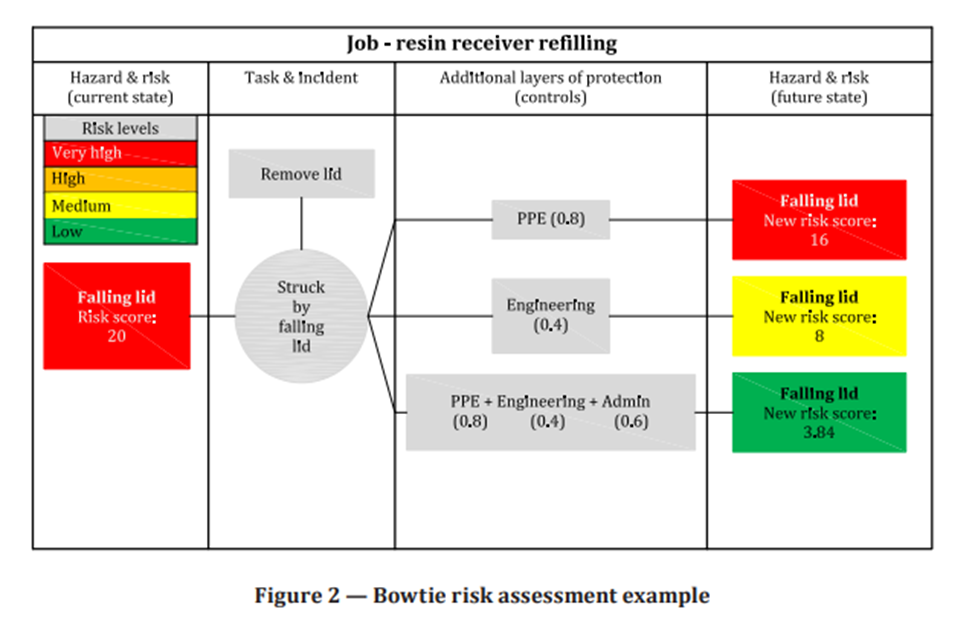

الأيزو (المنظمة الدولية للتقييس) هي اتحاد دولي لهيئات التقييس الوطنية (الهيئات الأعضاء في المنظمة الدولية للتقييس).وبصفة عامة عمل اعداد المعايير الدولية يتم من خلال اللجان الفنية لمنظمة الأيزو. كل هيئة عضو مهتمة بموضوع ما تم انشاء لجنة فنية له يحق لها ان تكون ممثلة في تلك اللجنة. المنظمات الدولية الحكومية وغير الحكومية ذات الصلة بمنظمة الأيزو تشارك أيضا في هذا العمل.
وتتعاون الأيزو أيضا بشكل وثيق مع اللجنة الدولية الكهرو تقنية (IEC) في جميع المسائل المتعلقة بالتوحيد القياسي الكهرو تقني.
تم توضيح الإجراءات المستخدمة لتطوير هذه الوثيقة وتلك المخصصة لاستمرارية المحافظة عليها تم تحديدها في إرشادات ISO/IEC، الجزء الأول. وعلى وجه الخصوص، يجب ملاحظة معايير الموافقة المختلفة اللازمة للأنواع المختلفة من وثائق ISO. تمت صياغة هذه الوثيقة وفقًا للقواعد التحريرية لتوجيهات ISO/IEC، الجزء الثاني (انظر www.iso.org/directives).
ونود التنويه الى ان بعض عناصر هذه الوثيقة قد تكون خاضعة لحق البراءة. الأيزو غير مسؤولة عن تحديد بعض او كل من هذه الحقوق تفاصيل بعض حقوق البراءة هذه تم تحديدها اثناء اعداد هذه الوثيقة. ستكون في المقدمة و/أو في قائمة ISO الخاصة بإعلانات براءات الاختراع المستلمة (انظر www.iso.org/patents).
أي اسم تجاري مستخدم في هذه الوثيقة هو معلومات مقدمة لراحة المستخدمين ولا يشكل مصادقة.
للحصول على شرح للطبيعة الطوعية للمعايير، ومعنى المصطلحات والتعبيرات الخاصة بـ ISO المتعلقة بتقييم المطابقة، بالإضافة إلى معلومات حول التزام ISO بمبادئ منظمة التجارة العالمية (WTO) في الحواجز الفنية أمام التجارة (TBT)، راجع URL: www.iso.org/iso/foreword.html تم إعداد هذه الوثيقة من قبل اللجنة الفنية ISO/TC 283، إدارة الصحة والسلامة المهنية.
يجب توجيه أي تعليقات أو أسئلة حول هذه الوثيقة إلى هيئة المعايير الوطنية للمستخدم. يمكن العثور على القائمة الكاملة لهذه الهيئات على www.iso.org/members.html.
المنظمة مسؤولة عن الصحة والسلامة المهنية (OH&S) لعمالها. وتشمل هذه المسؤولية تعزيز وحماية صحتهم الجسدية والعقلية. والمنظمة مسؤولة أيضًا عن اتخاذ الخطوات اللازمة لحماية الآخرين الذين يمكن أن يتأثروا بأنشطتها. وأفضل طريقة لتحقيق ذلك هي من خلال نظام إدارة الصحة والسلامة المهنية.
الغرض من نظام إدارة الصحة والسلامة المهنية هو توفير إطار لإدارة مخاطر وفرص الصحة والسلامة المهنية، وإدارة المخاطر والفرص لنظام الإدارة نفسه. تتمثل النتائج المقصودة من نظام إدارة الصحة والسلامة المهنية في التحسين المستمر لأداء السلامة والصحة المهنية، وتلبية المتطلبات القانونية والمتطلبات الأخرى، وتحقيق أهداف الصحة والسلامة المهنية.
تقدم هذه الوثيقة إرشادات حول كيفية تنفيذ متطلبات ISO 45001:2018 في أي نوع من المؤسسات ويجب استخدامها جنبًا إلى جنب مع ISO 45001:2018. حيثما ينص معيار ISO 45001:2018 على ما يجب القيام به، فإن هذه الوثيقة تتوسع في ذلك وتقدم إرشادات، بما في ذلك حالات من الحياة الواقعية، حول كيفية القيام بذلك. هناك كتيب مكمل لهذه الإرشادات العامة، انظر المرجع [2].
الهدف من ISO 45001:2018 هو تمكين المؤسسات من حماية جميع العاملين من الإصابة واعتلال الصحة، بغض النظر عن الخصائص الفردية. توفر هذه الوثيقة إرشادات إضافية حول كيفية ضمان تلبية الاحتياجات المحددة للأفراد ومجموعات العمال، مع الاعتراف بأن النهج العام لإدارة الصحة والسلامة المهنية يمكن أن يؤدي إلى عدم تلبية احتياجات مختلف الجنسين والأعمار والأقليات بشكل كامل.
تقدم هذه الوثيقة إرشادات حول إنشاء وتنفيذ وصيانة وتحسين مستمر لنظام إدارة الصحة والسلامة المهنية (OH&S) الذي يمكن أن يساعد المنظمات على التوافق مع ISO 45001:2018.
الملاحظة 1: على الرغم من أن الإرشادات الواردة في هذه الوثيقة تتوافق مع نموذج نظام إدارة السلامة والصحة المهنية ISO 45001:2018، إلا أنه ليس المقصود منها تقديم تفسيرات للمتطلبات الواردة في ISO 45001.
الملاحظة 2: لا يؤدي استخدام مصطلح "ينبغي" في هذه الوثيقة إلى إضعاف أي من متطلبات المواصفة القياسية ISO 45001:2018 أو إضافة متطلبات جديدة.
ملاحظة 3: بالنسبة لمعظم البنود الواردة في هذه الوثيقة، هناك حالات واقعية حول كيفية قيام أنواع مختلفة من المنظمات بتنفيذ المتطلبات. وليس المقصود منها اقتراح الطريقة الوحيدة أو الأفضل للقيام بذلك، ولكن وصف إحدى الطرق التي تم بها القيام بذلك بواسطة المنظمة.
تتم الإشارة إلى الوثائق التالية في النص بطريقة يشكل بعض أو كل محتواها متطلبات هذه الوثيقة. للحصول على مراجع مؤرخة، وأشارت فقط تطبق الطبعة.
بالنسبة للمراجع غير المؤرخة، تنطبق أحدث نسخة من الوثيقة المرجعية (بما في ذلك أي تعديلات). ISO 45001:2018، أنظمة إدارة الصحة والسلامة المهنية - المتطلبات مع إرشادات الاستخدام
ولأغراض هذه الوثيقة، تنطبق المصطلحات والتعريفات الواردة في ISO 45001:2018.
لتكون قادرة على تنفيذ نظام فعال لإدارة الصحة والسلامة المهنية، تحتاج المنظمة إلى فهم السياق الذي تعمل فيه وتحديد المشكلات التي يمكن أن تجعل الأمر أسهل أو أكثر صعوبة لتحقيق النتائج المرجوة من نظام إدارة الصحة والسلامة المهنية. النتائج المقصودة كما هي مدرجة في تعريف "نظام إدارة الصحة والسلامة المهنية" (انظر ISO 45001:2018، 3.11)
تهدف إلى منع الإصابة واعتلال صحة العمال وتوفير أماكن عمل آمنة وصحية. ويشمل تحسين أداء الصحة والسلامة المهنية، والوفاء بالمتطلبات القانونية والمتطلبات الأخرى، وتحقيق أهداف الصحة والسلامة المهنية.
هذه هي النتائج الأساسية الدنيا ولكن يمكن للمؤسسة تحديد نتائج إضافية مقصودة مثل تجاوز متطلبات ISO 45001:2018، على سبيل المثال. تشجيع المورد على تنفيذ نظام إدارة الصحة والسلامة المهنية أيضًا.
يجب أن تدرك المنظمة أن القضايا الخارجية والداخلية يمكن أن تتغير، وبالتالي يجب مراقبتها ومراجعتها. من المستحسن أن تقوم المنظمة بإجراء مراجعات لسياقها على فترات زمنية مخططة ومن خلال أنشطة مثل المراجعة الإدارية.
يمكن للمؤسسة اختيار توثيق هذه المعلومات إذا كانت تريد اعتماد نهج أكثر تنظيماً لنظام إدارة السلامة والصحة المهنية الخاص بها. ومع ذلك، فإن غياب مثل هذه الوثائق لا ينبغي أن يؤثر على قدرة المنظمة على السعي وإثبات التوافق مع ISO 45001، حيث يمكنها إثبات نهج منظم بوسائل أخرى.
يمكن للمنظمة استخدام منهجيات مختلفة لتحديد وتقييم القضايا الخارجية والداخلية. أحد الأمثلة على ذلك هو تحليل نقاط القوة والضعف والفرص والتهديدات.
راجع البند 5 للحصول على إرشادات حول كيفية إشراك العمال في هذه العملية.
تتعلق القضايا التي يتم تناولها في هذا البند بشكل أساسي بالتأثير على نظام إدارة السلامة والصحة المهنية وعادة ما يتم تحليلها على مستويات عالية في المنظمة.
يتم التعامل مع مخاطر الصحة والسلامة المهنية المحددة على المستويات التشغيلية ويتم أخذها في الاعتبار في 6.1.2 و6.1.3.
مثال الحالة الواقعية 1 حول كيفية تنفيذ المتطلبات في ISO 45001:2018, 4.1.
نفذت المنظمة خدمات متنوعة لمتطلبات لبند 4.1 وأجرت تحليلًا عالي المستوى للقضايا من خلال إجراء تمرين العصف الذهني بمشاركة موظفي الصحة والسلامة المهنية والعمال الآخرين وممثلي العمال والأشخاص ذوي المعرفة من مختلف أجزاء المنظمة وشخص من الإدارة العليا الذي يدعم الصحة والسلامة المهنية.
ناقش الفريق القضايا الخارجية والداخلية من منظور واسع وحدد ما هي ذات الصلة بنظام إدارة الصحة والسلامة المهنية.
ثم كان هذا بمثابة مدخلات لتحديد الأطراف المعنية (انظر 4.2)، وتحديد المجال (انظر 4.3)، ومعالجة المخاطر والفرص (انظر 6.1).
على الرغم من عدم وجود شرط في ISO 45001:2018 لتوثيق نتيجة هذا العمل السياقي، فقد اختارت المنظمة القيام بذلك على أي حال والتأكد من موافقة الفريق بأكمله على النتيجة. لقد أنشأوا جسرًا من السياق إلى التخطيط من خلال توثيق كل قضية ذات صلة بطريقة مصنفة، مع توضيح ما إذا كانت هذه قضية حالية أو مستقبلية، وما إذا كانت لها إمكانات إيجابية أو سلبية.
كما وضعوا قيمة لأهميتها النسبية وذكروا كيف ينبغي إدارة المشكلة في نظامهم (كمخاطر الصحة والسلامة المهنية، وحالات الطوارئ المحتملة، والمخاطر التي تهدد نظام الإدارة، وفرص أخرى، وما إلى ذلك). ويبين الجدول 1 جزءا مما وجدوه.
تتم مراجعة تمرين السياق هذا عندما تكون هناك تغييرات خارجية أو داخلية كبيرة تؤثر على المنظمة أو نظام إدارة السلامة والصحة المهنية، وغير ذلك عندما تراها المنظمة مناسبة.
الجدول 1 – بعض المشاكل الخارجية والداخلية التي تم العثور عليها
| فئة | مشكلة / الشأن | إطار زمني | سلبية أو إيجابية | أهمية نظام إدارة الصحة والسلامة المهنية | الإدارة التابعة |
|---|---|---|---|---|---|
| الثقافة: داخلية | عدم وجود اهتمام بالصحة والسلامة المهنية من الإدارة العليا | الحالي | سلبى | عالية | مخاطر نظام إدارة الصحة والسلامة المهنية |
| خطر مكان العمل | العمل على ارتفاعات مع منشآت العملاء | الحالي | سلبى | متوسطه | مخاطر الصحة والسلامة المهنية |
| خطر مكان العمل | مستويات الضوضاء في بعض العمليات | الحالي | سلبى | متوسطه | مخاطر الصحة والسلامة المهنية |
| الاقتصاد : داخلي | نقص الموارد المالية اللازمة للاستثمار في تحسينات الصحة والسلامة المهنية | الحالي | سلبى | متوسطه | غير مُدار حاليًا |
| النشاط : داخلي | الإدارة الكيميائية غير كافية | الحالي | سلبى | متوسطه | مخاطر الصحة والسلامة المهنية |
| الموارد: داخلية | تحسين كفاءة موظفي الصحة والسلامة المهنية بما يتجاوز المتطلبات | الحالي | سلبى | متوسطه | فرصة لنظام إدارة الصحة والسلامة المهنية |
| التكنولوجيا: خارجي | تم تطوير تقنيات جديدة للقضاء على المخاطر وتخفيف مخاطر الصحة والسلامة المهنية | الحالي | سلبى | متوسطه | فرصة لنظام إدارة الصحة والسلامة المهنية |
| الأطراف المهتمة: خارجية | متطلبات العملاء فيما يتعلق بشهادة نظام إدارة الصحة والسلامة المهنية | الحالي | سلبى | متوسطه | فرصة لنظام إدارة الصحة والسلامة المهنية |
| الأطراف المهتمه: داخلية | عدم مشاركة ممثلي العمال | الحالي | سلبى | متوسطه | مخاطر نظام إدارة الصحة والسلامة المهنية |
| الشركة : داخلية | ضعف التواصل الداخلي بشأن الصحة والسلامة المهنية | الحالي | سلبى | متوسطه | مخاطر نظام إدارة الصحة والسلامة المهنية |
| الموارد: خارجية | لا يتمكن موردو معدات حماية الصحة والسلامة المهنية، بما في ذلك معدات الحماية الشخصية (PPE) دائمًا من تسليم البضائع المطلوبة عندما يكون هناك طلب متزايد في السوق | الحالي | سلبى | متوسطه | مخاطر نظام إدارة الصحة والسلامة المهنية |
| الشركة : داخلية | عدم وجود اعتبار محدد للقضايا المتعلقة بالنوع والعاملين غير الثنائيين والمجموعات المحددة الأخرى بالإضافة إلى توفير هذه المجموعات | الحالي | سلبى | متوسطه | مخاطر نظام إدارة الصحة والسلامة المهنية |
تعد احتياجات وتوقعات (أي المتطلبات) للعاملين والأطراف المعنية الأخرى مهمة عند النظر في السياق الذي تعمل فيه المنظمة.
من المهم أن تأخذ المنظمة في الاعتبار خصائص العاملين لديها وكيف يمكن أن تؤثر هذه الخصائص على الاحتياجات والتوقعات.
يمكن أن يكون لدى الأجناس والفئات العمرية المختلفة احتياجات وتوقعات مختلفة تمامًا عن الآخرين. مجموعات الأقليات (مثل الأقليات العرقية، والعمال ذوي الإعاقات الجسدية أو العقلية، والعاملين أو جنس غير تقليدي) لديهم أيضًا احتياجات وتوقعات لا يتم الاعتراف بها أو فهمها دائمًا.
إن تحديد الأطراف المعنية ذات الصلة بنظام إدارة الصحة والسلامة المهنية وتطوير العلاقة معهم يمكّن من التواصل، مما يمكن أن يحسن مشاركة العمال، ويزيل العوائق التي تحول دون المشاركة، ويؤدي إلى ثقافة تدعم الصحة والسلامة المهنية، وبناء التفاهم والثقة والاحترام المتبادل.
يجب على المنظمة أن تحدد الاحتياجات والتوقعات ذات الصلة للعاملين والأطراف المعنية الأخرى، لتحديد تلك التي يتعين عليها الالتزام بها والاتفاقيات الطوعية التي تختار الالتزام بها. يمكن أن تختلف الأساليب المستخدمة والموارد المطبقة اعتمادًا على، على سبيل المثال، حجم وطبيعة المنظمة، والتمويل المتاح، ومخاطر وفرص الصحة والسلامة المهنية التي ينبغي معالجتها، وخبرة المنظمة في إدارة السلامة والصحة المهنية.
يمكن للأطراف المعنية أن تتغير بمرور الوقت ويمكن أن تعتمد على القطاع أو الصناعة أو الموقع الجغرافي الذي تعمل فيه المنظمة.
التغييرات في القضايا الخارجية أو الداخلية التي تشكل جزءًا من سياق المنظمة يمكن أن تؤدي أيضًا إلى تغيير في الأطراف المعنية.
قد يكون من الممارسات الجيدة الحفاظ على تحديث هذه المعلومات.
لا يوجد نهج واحد لتحديد الاحتياجات والتوقعات. يجب على المنظمة استخدام نهج مناسب لنطاقها وطبيعتها وحجمها، ومناسب من حيث التفاصيل والتعقيد والوقت والتكلفة وتوافر البيانات الموثوقة.
يجب على المنظمة أن تأخذ في الاعتبار مخرجات الخطوات المذكورة أعلاه عند تحديد مجال نظام إدارة الصحة والسلامة المهنية الخاص بها، ووضع سياسة الصحة والسلامة المهنية الخاصة بها، ومعالجة المخاطر والفرص. وعلى الرغم من أنها ليست شرطًا، إلا أنه قد يكون من المفيد توثيق هذه المعلومات لتسهيل استخدامها لتلبية المتطلبات الأخرى في المواصفة القياسية ISO 45001.
مثال 1: الحالة الواقعية 1 حول كيفية تنفيذ المتطلبات في ISO 45001:2018، 4.2.
في شكل ورشة عمل لتبادل الأفكار، قامت المنظمة بعد ذلك بإدراج كل ما يمكن أن تفكر فيه والذي تطلبه أو قد تطلبه هذه الأطراف المهتمة المختلفة من المنظمة فيما يتعلق بالصحة والسلامة المهنية. ثم أدرجت أيضًا أي شيء يمكن لأي شخص في ورشة العمل أن يتذكره وأن هذه الأطراف المهتمة قد سألت عنه أو حتى أبدت اهتمامًا به، فيما يتعلق بالصحة والسلامة المهنية. كما قاموا بتضمين متطلبات من الماضي وأضافوا أشياء اعتقدوا أنها ستصبح متطلبات أو ستصبح مهمة للأطراف المعنية في السنوات القادمة.
وكانت الخطوة الأخيرة هي تحديد أي من هذه الاحتياجات والتوقعات ستحتاج المنظمة إليها أو تختار الالتزام بها. وشملت هذه المتطلبات القانونية، والاتفاقيات الجماعية، وقرارات مجلس الإدارة والإدارة العليا المتعلقة بالصحة والسلامة المهنية (على الرغم من أنهم وجدوا اثنين متعارضين ويجب حلهما) والاتفاقيات التعاقدية.
تم توثيق النتيجة في ملف ثم تم استخدامها كنقطة انطلاق لعملية الدخول في تفاصيل المتطلبات القانونية والمتطلبات الأخرى وكيفية استيفاء المنظمة لهذه المتطلبات (انظر 6.1.3).
تم توثيق النتيجة في ملف ثم تم استخدامها كنقطة انطلاق لعملية الدخول في تفاصيل المتطلبات القانونية والمتطلبات الأخرى وكيفية استيفاء المنظمة لهذه المتطلبات (انظر 6.1.3).
| طرف مهتم/ طرف معنى | احتياجات و/أو تتوقع من المنظمة أن: |
|---|---|
| عمال: |
|
| سلطات |
|
| المقاولون |
|
| المالكين |
|
| عملاء |
|
| الموردين |
|
| ممثلي العمال |
|
أجرت إحدى المنظمات الخدمية الصغيرة دراسة استقصائية للأطراف المعنية المحددة خلال ورشتي عمل بمشاركة مدير الصحة والسلامة المهنية، ومدير العمليات، وممثل العمال، ومدير العلاقات الإنسانية، ومحامي واثنين من المستشارين الخارجيين.
أولاً، قامت المجموعة بتحديد الأطراف المعنية ذات الصلة؛ ثم أدرجت أي شيء يعرفه أي شخص في ورشة العمل وقد طلبته هذه الأطراف المعنية أو أبدت اهتمامًا به، فيما يتعلق بالصحة والسلامة المهنية.
كما قاموا بتضمين متطلبات من الماضي وأضافوا أشياء اعتقدوا أنها ستصبح متطلبات أو ستصبح مهمة للأطراف المعنية في السنوات القادمة.
تمت مراجعة نتائج الاستطلاع من قبل المالك وتم إرسالها إلى ممثل العمال لطلب المزيد من المدخلات و/أو المراجعة
وبناءً على هذه المدخلات، حددت الشركة ما يجب الالتزام به
وتمت مشاركة النتائج مع الموظفين في اجتماع للحصول على تعليقات ووضع خطة للتنفيذ.
ينبغي الحرص على مراعاة الحدود الجغرافية والقضائية والمادية والتنظيمية عند تحديد وتوثيق مجال نظام إدارة السلامة والصحة المهنية.
يجب أن تفهم المنظمة مدى السيطرة أو التأثير الذي يمكن أن تمارسه على الأنشطة والمنتجات والخدمات قبل اتخاذ قرار بشأن المجال.
ومع ذلك، فمن الأهمية لنجاح نظام إدارة الصحة والسلامة المهنية ولمصداقية المنظمة التأكد من عدم تحديد المجال بطريقة تستبعد الأنشطة أو المنتجات أو الخدمات أو المرافق التي لها أو يمكن أن يكون لها تأثير كبير على أداء الصحة والسلامة المهنية
ولا ينبغي أيضًا تعيين المجال للتهرب من المتطلبات القانونية أو المتطلبات الأخرى، أو لتضليل الأطراف المعنية.
إذا قامت المنظمة بتغيير مجال سيطرتها أو نفوذها، أو توسيع عملياتها أو تقليصها، أو إجراء تغييرات أخرى من المحتمل أن تؤثر على نظام إدارة الصحة والسلامة المهنية، فيجب إعادة النظر في المجال.
عند النظر في مجال نظام إدارة السلامة والصحة المهنية، من المهم أن نفهم أن الوظائف والعمليات الخارجية يمكن أن تؤثر على النتائج المقصودة لنظام إدارة السلامة والصحة المهنية
يجب على المنظمات أن تأخذ في الاعتبار هذه الأنشطة عند تحديد مجال حدود نظام الإدارة الخاص بها
مزيد من التفاصيل حول وظائف الاستعانة بمصادر خارجية متاحة في 8.1.4.3.
من الممارسات الجيدة إتاحة المجال للأطراف المعنية. هناك عدة طرق للقيام بذلك (على سبيل المثال، استخدام وصف مكتوب، أو التضمين على خريطة الموقع، أو مخطط تنظيمي، أو صفحة ويب، أو نشر بيان عام).
قامت شركة كبيرة متعددة المواقع بمراجعة متطلبات ISO 45001
وباتباع المتطلبات، حددت هذه الشركة قضاياها الخارجية والداخلية جنبًا إلى جنب مع احتياجات وتوقعات الأطراف المعنية
ثم قرروا البدء بالتنفيذ التجريبي لنظام إدارة الصحة والسلامة المهنية في أحد مواقعهم بجميع عملياته
وكان الهدف هو استخدام الخبرات المكتسبة من هذا البرنامج التجريبي لمعرفة كيف يمكن تحسين أداء الصحة والسلامة المهنية في جميع أنحاء المنظمة بأكملها
وقد تم توثيق هذا القرار وإبلاغه داخليًا ونشره على موقع الشركة الإلكتروني
قررت المنظمة تنفيذ نظام إدارة السلامة والصحة المهنية في جميع أنحاء المنظمة بأكملها في 80 موقعًا
إنهم يدركون أن هذا التزام كبير، لكن الإصابات واعتلال الصحة تمثل مشكلة في العديد من المواقع، ولا يريدون إعطاء الانطباع بأن السلامة في مكان ما أكثر أهمية من مكان آخر
واستنادًا إلى مراجعتهم لمتطلبات الأطراف المعنية، هناك أيضًا توقع من كل من مجلس الإدارة والعملاء الرئيسيين بضرورة وجود نظام لإدارة السلامة والصحة المهنية.
قرر مصنع صغير أن تنفيذ نظام إدارة الصحة والسلامة المهنية من شأنه أن يقلل من الإصابات ويخلق مكان عمل آمنًا وصحيًا.
عقد المالك اجتماعًا مع موظفيه الخمسين لجمع معلومات حول احتياجاتهم وتوقعاتهم. ثم نظر المالك في القضايا الخارجية والداخلية التي تواجه الشركة، مثل النمو وندرة الموارد
قام المالك بوضع خطة لتطبيق ISO 45001:2018 خطوة بخطوة على مدى عامين
وشمل المجال جميع عمليات وأنشطة المنظمة، بما في ذلك العمل الذي يتم الاستعانة بمصادر خارجية حاليًا لمنظمة أخرى. قام المالك بتوثيق المجال وخطة التنفيذ وأبلغهما في اجتماع الموظفين التالي. تم أيضًا نشر المجال والخطة على صفحة الويب الخاصة بهم لـأصحاب المصلحة الخارجيين.
تناقش شركة صغيرة تقوم بتصميم وتصنيع أدوات المائدة البلاستيكية لشركات الطيران مجال نظام إدارة الصحة والسلامة المهنية الخاص بها.
لديهم مبنى صناعي واحد يشغل جزءًا من قطعة أرض كبيرة إلى حد ما كانت تستخدم سابقًا لأغراض أخرى
لقد أدت التكنولوجيا الحديثة إلى تقليل الحاجة إلى قطعة أرض كبيرة كهذه لأنشطة التصنيع الأساسية، لذلك قرروا فتح مطعم بالقرب من مبنى التصنيع
وفي الوقت نفسه، قررت المنظمة تطبيق نظام إدارة السلامة والصحة المهنية في مصنع التصنيع فقط. تم تعريف مجال نظام إدارة الصحة والسلامة المهنية على أنه "تصميم وتصنيع أدوات المائدة البلاستيكية في الموقع X"
على الرغم من أن المطعم يقع على نفس قطعة الأرض المملوكة لنفس الشركة، إلا أن نظام إدارة الصحة والسلامة المهنية يعتبر "مكان العمل" هو الجزء الوحيد من الموقع الذي يشغله مصنع التصنيع
يمكن العثور على المتطلبات المحددة للعناصر الفردية أو عمليات نظام الإدارة في كل من البنود الأخرى في ISO 45001.
يمكن العثور على المتطلبات المحددة للعناصر الفردية أو عمليات نظام الإدارة في كل من البنود الأخرى في ISO 45001.
يعتمد مستوى التفاصيل والتعقيد في نظام إدارة السلامة والصحة المهنية، ومدى التوثيق والموارد المخصصة له على السياق (الحجم والهيكل والتعقيد) للمنظمة وأنشطتها. تم تضمين قائمة كاملة بالمعلومات الموثقة المطلوبة بموجب ISO 45001:2018 في 7.5.
لدى المؤسسة التعليمية برنامج تطوير مهني محدد جيدًا للعاملين فيها يتضمن موضوعات مثل الموارد البشرية، وبرامج الكمبيوتر، وعروض الدورات المالية والمدرسية.
قررت المنظمة، أثناء مراجعتها لمجال ومتطلبات ISO 45001، دمج متطلبات الكفاءة لنظام إدارة الصحة والسلامة المهنية في برنامج وعمليات التطوير المهني الحالي بدلاً من إنشاء برنامج منفصل لكفاءة الصحة والسلامة المهنية.
قامت شركة توزيع كبيرة لها عدة مواقع بإنشاء فريق نظام إدارة.
يضم أعضاء الفريق شخصًا واحدًا من الإدارة العليا، ومدير عمليات واحدًا على الأقل، ومدير الصحة والسلامة المهنية بالشركة، مدير سلامة مركز التوزيع، وممثل امتثال المنتج، ومدقق داخلي وموظفين يمثلون مناطق متنوعة من شبكة التوزيع
يجتمع فريق نظام الإدارة سنويًا لتحديث (صيانة) جميع الوثائق بما في ذلك سياسة الصحة والسلامة المهنية ومجال نظام الإدارة والأدوار والمسؤوليات التنظيمية والمتطلبات القانونية وغيرها.
بالإضافة إلى ذلك، تتم مراجعة المخاطر/الفرص وتصنيفها كل عام. يستخدم الفريق المخاطر الأعلى تصنيفًا لتحديد الفرص. ثم يختار الفريق من بين هذه الفرص لتحديد أهدافه للعام الحالي. لدى الشركة إجراء مكتوب حول كيفية إكمال هذه العملية كل عام لضمان التحسين المستمر.
يجب أن تشارك الإدارة العليا في أداء وفعالية نظام إدارة السلامة والصحة المهنية وتعزيزها والتواصل معها ومراقبتها.
وتعتمد كيفية تطبيق ذلك على عوامل مختلفة، مثل حجم المنظمة وتعقيدها، وأسلوب الإدارة والثقافة التنظيمية.
تم تعريف مصطلح "الإدارة العليا" في ISO 45001:2018, 3.12 على أنها "الشخص أو مجموعة الأشخاص الذين يوجهون المنظمة ويسيطرون عليها على أعلى مستوى".
إنهم مسؤولون ومسؤولون عن الأداء العام لنظام الإدارة وعن دعم العاملين الآخرين لإظهار القيادة والالتزام في مجالات مسؤوليتهم
وفي بنود أخرى، هناك أمثلة على المزيد من مسؤوليات الإدارة العليا المباشرة بما في ذلك سياسة الصحة والسلامة المهنية، والأدوار التنظيمية، والمسؤوليات والسلطات، بالإضافة إلى مراجعة الإدارة
إذا كان مجال نظام الإدارة يغطي جزءًا فقط من المنظمة، فإن الإدارة العليا تشير إلى أولئك الذين يوجهون هذا الجزء من المنظمة ويسيطرون عليه
يجب على الإدارة العليا أن تأخذ بعين الاعتبار دمج متطلبات الصحة والسلامة المهنية في العمليات التجارية العامة وعند تحديد المهمة والرؤية والقيم
وحيثما كان ذلك مناسبا، ينبغي إدراج هذه العناصر في تشكيل الأعمال الشاملة للمنظمة والتوجه الاستراتيجي والخطط التشغيلية
ويعني التزام الإدارة العليا أيضًا توفير الموارد المادية والمالية، بالإضافة إلى التوجيه
ويشمل المشاركة النشطة، وإزالة الحواجز التي يمكن أن تحد من مشاركة العمال، وقيادة الآخرين لدعم نظام الصحة والسلامة المهنية، والتعبير عن أهمية الإدارة الفعالة للسلامة والصحة المهنية
ويعني ذلك أيضًا ضمان إنشاء عمليات التشاور والمشاركة الفعالة
هناك متطلب محدد آخر للإدارة العليا وهو ضمان حماية العمال من الأعمال الانتقامية عند الإبلاغ عن مشكلات الصحة والسلامة المهنية مثل الإصابات أو اعتلال الصحة أو الظروف غير الآمنة أو الحوادث الوشيكة أو المخاطر والفرص المتعلقة بالصحة والسلامة المهنية أو نظام الإدارة
تضمن الإدارة العليا للشركة أن قراراتها بشأن مسائل الصحة والسلامة المهنية تتوافق مع قيمها ويمكن أن تثبت أنها تلبي المتطلبات في 5.1 ح) من خلال تحديد أهداف الأداء للمديرين والمشرفين المرتبطة بالتحسين المستمر لأداء السلامة والصحة المهنية ونظام إدارة الصحة والسلامة المهنية
وتكرم المنظمة أيضًا الموظفين الذين يقدمون اقتراحات للتحسين.
في إحدى شركات التصنيع، يقوم المديرون بإشراك العمال بنشاط في تحسين السلامة والصحة المهنية من خلال توعيتهم بالمخاطر وحثهم على الإبلاغ عن جميع المواقف الخطيرة بما في ذلك الحوادث الوشيكة. لقد دعموا وشجعوا العمال على طرح أفكارهم الخاصة لتحسين الصحة والسلامة المهنية
قام المديرون أيضًا بترويج الصحة والسلامة المهنية من خلال تقديم الدعم المستهدف لمزيد من التدريب
أظهر المديرون أيضًا أن الصحة والسلامة تمثل أولوية قصوى من خلال معالجة هذا الموضوع بانتظام خلال الاجتماعات والجولات في جميع أنحاء المنظمة. تم حجز جزء من وقت عمل الإدارة العليا لتنفيذ وتعزيز الصحة والسلامة المهنية
أظهر مالك مؤسسة صغيرة التزامه بتوفير مكان عمل صحي وآمن من خلال تضمين مثال على ما تم القيام به مؤخرًا لتحسين أداء الصحة والسلامة المهنية، خلال الاجتماعات الشهرية على مستوى المنظمة التي عقدت مع الموظفين
خلال هذه الاجتماعات، تم تشجيع الموظفين على تقديم تعليقات حول التجارب الإيجابية والسلبية في مكان العمل من حيث صلتها بنظام إدارة الصحة والسلامة المهنية
من خلال تقديم أمثلة على الالتزام والقيادة باستمرار وإشراك الموظفين في المحادثات في الاجتماعات، طور المالك ثقافة تدعم النتائج المقصودة لنظام إدارة الصحة والسلامة المهنية
في خدمة عامة إقليمية، لتقديم نظام إدارة الصحة والسلامة الجديد بما يتماشى مع المعايير الدولية، والبدء في عملية الانتقال من المعيار الوطني الذي عفا عليه الزمن، اتخذت الإدارة العليا قرارًا بشراء وتوزيع نسخ فردية ISO 45001:2018 لمندوبيهم النقابيين وأعضاء لجنة الصحة والسلامة
لقد اختاروا القيام بذلك لكسب ثقة القوى العاملة النقابية، ولبدء مشاركة استراتيجية جديدة رفيعة المستوى بشأن الوقاية من الإصابات واعتلال الصحة، بما يتجاوز الدورة المعتادة للحوادث والمخاطر وتقييمات المخاطر
تم إرسال نسخ ISO 45001:2018 مع عرض للمشاركة في إعادة صياغة لجنة الصحة والسلامة المشتركة على مستوى الخدمة، والتي تسمى الآن "لجنة الخدمة العامة الإقليمية ISO 45001:2018"، بمشاركة من الإدارة العليا وكبار موظفي الصحة والسلامة المهنية وغيرهم المديرين. بدأت العملية بجلسة تدريبية مشتركة لجميع أعضاء لجنة ISO 45001، مع دعوة مسؤولي الاتحاد المعني للحضور
وكان أحد العناصر الأساسية في مذكرة التفاهم لإنشاء هذه اللجنة هو منحها دورًا رئيسيًا في إجراء عملية تدقيق ISO 45001:2018، والتي كانت تتم في السابق من قبل الإدارة فقط
وفي الرسالة المرفقة بمذكرة التفاهم، ذكر رئيس مجلس الإدارة أن "قيادة هذه المنظمة ترى الفرص التي يوفرها معيار ISO 45001، لتعميق مشاركتنا مع القوى العاملة لدينا وممثليهم لتحسين العمل"
اتفق مندوبو النقابة وأعضاء لجنة الصحة والسلامة على أن الوقت قد حان لتجربة نموذج مشاركة استراتيجية أعلى، وهذا ما عرضته ISO 45001:2018
تم عقد الاجتماع الأول للجنة ISO 45001:2018 بعد أيام قليلة من الجلسة التدريبية المشتركة
بعد وقوع عدد من الحوادث الوشيكة المتعلقة بالصحة والسلامة ثم وقوع حادث في ورشة عمل صغيرة لتصنيع الخزانات، قرر المالك/المدير أن هناك حاجة إلى تغييرات في كيفية التعامل مع الصحة والسلامة في المنظمة
كان المالك قد قرأ عن ISO 45001:2018 بعد بحث عبر الإنترنت حول تحسين الصحة والسلامة. اشترى نسخة لقراءتها وقرر عقد اجتماع لجميع الموظفين للحديث عن الحادث الأخير وتقديم أول نظام لإدارة الصحة والسلامة في ورشة العمل
عندما عرض المالك البنود المختلفة لمعيار ISO 45001:2018 على شاشة جهاز العرض، تحدثوا عن الحوادث الوشيكة والحادث ونوع نظام إدارة الصحة والسلامة الذي يناسب سياقهم
خلال الاجتماع، تفاجأ الموظفون بمدى تأثير معيار ISO 45001:2018 على مشاوراتهم ومشاركتهم، ورأوا الفرصة ليكون لهم صوت أكبر في العمل
ونظرًا لحجم المنظمة، اتفق الجميع على أنه ليس من الضروري إنشاء لجنة تمثيلية للصحة والسلامة. تم الاتفاق على البدء في عملية إدخال النظام الجديد، من خلال عقد اجتماعات أسبوعية لجميع الموظفين صباح يوم الاثنين للحديث عن الأعمال المخطط لها خلال الأسبوع، وللاطلاع بشكل منهجي على قضايا الصحة والسلامة التي طرحها العمل
كما تعهد الموظفون الأكثر خبرة بالتحدث بشكل أكثر تكرارًا مع المتدربين والعمال المؤهلين حديثًا حول العمل الآمن ومساعدتهم على رؤية العلامات التحذيرية للعمل غير الآمن
اتفق كل من المالك والموظفين على أن الجداول الزمنية السريعة للطلبات وضغوط العمل تحتاج أيضًا إلى إدارة أفضل، حيث كانت هذه هي المخاطر الأساسية التي تسببت في وقوع الحادث
وافق المالك على إجراء مناقشات أكثر تفصيلاً مع الموظفين الأكثر خبرة فيما يتعلق بالمواعيد النهائية للتسليم في مفاوضات العقود مع العملاء
ينص معيار ISO 45001:2018، 5.2 على أن سياسة الصحة والسلامة المهنية الخاصة بالمنظمة يجب أن تكون "مناسبة لغرض وحجم وسياق المنظمة والطبيعة المحددة لمخاطر الصحة والسلامة المهنية وفرص الصحة والسلامة المهنية".
وهذا يعني أنه يجب أن يكون محددًا بدرجة كافية للتركيز على القضايا التي تهم المنظمة للحفاظ على سلامة العمال وصحتهم وتحسين أداء الصحة والسلامة المهنية بشكل مستمر.
وينبغي أن تمكن العمال من فهم الالتزام العام للمنظمة وكيف يمكن أن يؤثر ذلك على مسؤولياتهم الفردية.
عند تطوير سياسة الصحة والسلامة المهنية الخاصة بها، يمكن للمنظمة أن تأخذ في الاعتبار، على سبيل المثال:
ليس المقصود من المتطلبات المتعلقة بسياسة الصحة والسلامة المهنية في ISO 45001:2018 تحديد نص محدد يجب أن يكون في سياسة الصحة والسلامة المهنية ولكن يمكن تغطيته من خلال كلمات أخرى بنفس المعنى.
يمكن ربط سياسة الصحة والسلامة المهنية أو دمجها مع وثائق السياسة الأخرى للمنظمة ويجب أن تكون متسقة مع سياسات الأعمال العامة للمنظمة.
عند توصيل السياسة، يجب مراعاة كيفية خلق الوعي والحفاظ عليه لدى العمال الجدد والحاليين وكيفية التحقق مما إذا كان قد تم فهمه بشكل صحيح. يمكن أن تكون السياسة يتم توصيلها بأشكال بديلة، مثل استخدام القواعد والتوجيهات والإجراءات وبطاقات المحفظة والملصقات واستخدام رموز QR وما إلى ذلك. عند توصيل السياسة، ينبغي أخذ تنوع العمال في الاعتبار
يمكن أن تكون اللغة البسيطة والجمل القصيرة مفيدة لتحقيق أقصى قدر من إمكانية الوصول.
إن إتاحة السياسة بالتنسيقين المكتوب والمسموع وترجمتها إلى اللغات ذات الصلة يمكن أن يساعد أيضًا. والأمر متروك للمنظمة لتحديد الطريقة التي ترغب بها في إتاحة السياسة للأطراف المعنية، على سبيل المثال. من خلال النشر على موقع إلكتروني أو من خلال توفير نسخ مطبوعة عند الطلب
فالتغيير أمر لا مفر منه، مع تطور التشريعات والتوقعات المجتمعية. وبالتالي، يجب مراجعة سياسة الصحة والسلامة المهنية الخاصة بالمنظمة بشكل دوري لتقييم مدى ملاءمتها وفعاليتها المستمرة
إذا تم إجراء تغييرات على السياسة، فيجب إرسال السياسة المنقحة إلى جميع أنحاء المنظمة وإلى الأطراف المعنية ذات الصلة
تختار منظمة متوسطة الحجم في صناعة الأغذية استخدام سياسات من صفحة واحدة، والتي يسهل توصيلها إلى العمال حتى يكونوا على دراية بما تقوله. تقوم المنظمة بتطوير سياسة موقعة من قبل الرئيس التنفيذي. إنها تنص على أن:
"تلتزم المنظمة X بالتحسين المستمر لنظام إدارة الصحة والسلامة المهنية الخاص بها من أجل توفير ظروف عمل آمنة وصحية للوقاية من الإصابات المرتبطة بالعمل واعتلال الصحة، والقضاء على المخاطر وتقليل مخاطر الصحة والسلامة المهنية.
سيتم ربط أهداف الصحة والسلامة المهنية بالتحديات الرئيسية لهذه المنظمة، والتي تشمل بيئة العمل، وحراسة الآلات في الإنتاج، والقضايا النفسية والاجتماعية بما في ذلك قضايا عبء العمل، والسلامة المرورية.
نحن نشجع استشارة العمال على جميع المستويات في جهود الصحة والسلامة المهنية لدينا، مما يضمن أخذ آراء جميع العمال في الاعتبار، ونحن ملتزمون بالامتثال للقوانين والالتزامات الأخرى المتفق عليها.
تتم مراجعة هذه السياسة سنويًا أثناء أنشطة المراجعة الإدارية ويتم إتاحتها من خلال صفحات الويب الخاصة بنا على الإنترنت وإتاحتها في أماكن الاستقبال وغرف الغداء والمواقع الأخرى.
تقوم إحدى المنظمات الكبيرة التي لها عمليات في العديد من البلدان المختلفة بكتابة سياسة الشركة من صفحة واحدة للسلامة والصحة المهنية والتي تكون صالحة طوال العمليات ولكنها تسمح للعمليات المحلية بالإضافة إلى سياسة الشركة للسلامة والصحة المهنية إذا كانت هناك تحديات محددة تتجاوز تحديات الشركة. تنص سياسة الشركة على ما يلي:
"نحن شركة رائدة في أعمال ZZZ، وتعتبر سلامة ورفاهية موظفينا والآخرين الذين يؤدون العمل لدينا قيمة أساسية. وتشمل التحديات الرئيسية السلامة الكيميائية وتنظيم العمل وجودة الهواء.
ونحن ملتزمون:
يقوم متجر بيع بالتجزئة صغير يضم 25 موظفًا بتطوير سياسة الصحة والسلامة المهنية الخاصة به في اجتماع منتظم للموظفين. يقوم المالك بمراجعة المتطلبات ومشاركتها مع الموظفين، ويقومون معًا بوضع سياسة تلبي المتطلبات بكلمات يفهمها الموظفون بوضوح.
في نهاية العملية، يقوم كل موظف بالتوقيع على السياسة لتوضيح التزامهم. يوقع الموظفون الجدد على السياسة كجزء من عملية التوجيه الخاصة بهم ويتم إعطاؤهم نسخة من السياسة. وفي كل عام، تتم مراجعة السياسة في اجتماع للموظفين وتجديدها، وتكرر العملية.
لكي يكون نظام إدارة الصحة والسلامة المهنية فعالاً ويحقق النتائج المرجوة، من الضروري أن يتم تعيين المسؤوليات والسلطات للأدوار ذات الصلة داخل نظام إدارة الصحة والسلامة المهنية للعاملين من قبل الإدارة العليا وفهمها داخل المنظمة. يجب أن يكون العمال قادرين على اتخاذ القرارات وتنفيذ التغيير في المنطقة و/أو العمليات التي تم تكليفهم بها.
من الضروري التأكيد على أنه على الرغم من إمكانية تفويض السلطة، إلا أن المسؤولية العامة والمساءلة عن نظام الصحة والإدارة تظل على عاتق الإدارة العليا. يجب على الإدارة العليا:
في بعض المنظمات، يمكن أن يكون هناك عدد محدود من الأشخاص ذوي الكفاءة المطلوبة للقيام بالمهام المطلوبة. في مثل هذه المواقف، قد يكون من المفيد التخطيط لتقاسم الأدوار والمسؤوليات. تعتبر هذه الخطط أيضًا ذات قيمة أثناء العطلات، عندما يكون المديرون بعيدًا عن المنشأة، أو في حالات الحوادث أو المرض.
يجب أن تحدد الإدارة العليا كيفية توصيل المسؤوليات والسلطات المعينة للأدوار ذات الصلة داخل نظام إدارة السلامة والصحة المهنية. ويمكن القيام بذلك من خلال المعلومات الموثقة ذات الصلة (مثل الإجراءات والتعليمات ووصف الوظيفة/المشروع/المهمة، وحزم التدريب/التعريف)، تحديثات الاجتماعات، أو التواصل الجماعي الإلكتروني أو وجهًا لوجه، أو من خلال مجموعة من الأساليب.
تقوم شركة كيميائية صغيرة بتوصيل مسؤوليات وسلطات الصحة والسلامة المهنية من خلال تضمينها في التوصيف الوظيفي وعمليات تقييم الأداء الوظيفي.
قامت هذه الشركة بتطوير أوصاف لكل دور متعلق بالصحة والسلامة المهنية في المنظمة لتوفير الوضوح بشأن التوقعات المتعلقة بنظام إدارة الصحة والسلامة المهنية. وهذا يساعد الإدارة العليا على إثبات أنه تم تعيين المسؤوليات والسلطات وإبلاغها وتوثيقها
بمجرد إضفاء الطابع الرسمي على المهام، تظهر الإدارة العليا أيضًا التزامها من خلال متابعة أدائها.
تمتلك شركة الاستشارات الإدارية العالمية أكثر من 40 موقعًا قامت بتطبيق نظام إدارة الصحة والسلامة المهنية.
تختلف إدارة العمليات في كل موقع. قررت المنظمة تطوير قائمة مرجعية لمتطلبات نظام إدارة الصحة والسلامة المهنية وطلبت من كل موقع تحديد الأدوار في موقعه والتي تم تعيين المسؤولية والسلطة لتلبية كل متطلبات
ومن خلال القيام بذلك، ضمنت المنظمة أن نظام إدارة السلامة والصحة المهنية بالموقع يتوافق مع متطلبات ISO 45001.
يجب أن تقوم الإدارة العليا بإشراك العمال في المستويات والوظائف المعمول بها (وممثليهم، حيثما يوجد مثل هؤلاء الممثلين) عند إنشاء نظام إدارة السلامة والصحة المهنية وتنفيذه وصيانته وتحسينه باستمرار.
يجب على المنظمة التأكد من استشارة العمال وممثليهم (أي منحهم حق الوصول إلى المعلومات).
فرصة لتقديم اقتراحاتهم وآرائهم) والمشاركة (أي المشاركة في صنع القرار) والحصول على الوقت الكافي والتدريب على نظام إدارة الصحة والسلامة المهنية.
وينبغي إعطاء العمال المعلومات الكافية حتى يتمكنوا من المشاركة بفعالية و/أو استشارتهم، وينبغي إزالة العقبات والحواجز التي تحول دون المشاركة أو على الأقل التقليل منها إلى أدنى حد. يجب على المنظمة إبلاغ العمال، وخاصة العمال الجدد، بمن هم ممثلوهم في الأمور المتعلقة بالصحة والسلامة المهنية.
تركز المنظمات عادةً على إشراك جميع مستويات الإدارة وخبراء الصحة والسلامة المهنية، ولكنها تفشل في بعض الأحيان في إشراك العاملين الآخرين غير الإداريين مثل العاملين في المتجر، والموظفين الإداريين، وموظفي المبيعات وغيرهم من المستويات الأدنى من التسلسل الهرمي للمنظمة.
وبما أن هذا أمر شائع، فهناك متطلبات محددة في ISO 45001 تؤكد على أهمية إشراك العاملين غير الإداريين. تحدد المتطلبات الواردة في هذا البند الفرعي متى تكون المشاركة والتشاور ضرورية.
تركز المنظمات أيضًا عادةً على مجموعات من العمال الذين يشكلون الأغلبية ووجهات النظر التاريخية المقبولة، وبالتالي لا يمكن أن يفشلوا في فهم أو أخذ احتياجات عمال أو مجموعات معينة من العمال في الاعتبار. يمكن أن تكون آليات المشاركة والتشاور مهمة لضمان التمثيل الكامل للنساء والأشخاص ذوي الإعاقة والأقليات العرقية وغيرها من الأقليات
يتم احترام القضايا المثارة والاقتراحات المقدمة والآراء بشأن القرارات والعمل بموجبها.
يتم احترام القضايا المطروحة والاقتراحات المقدمة والآراء بشأن القرارات والتصرف بناءً عليها.
التشاور مطلوب لتحديد الاحتياجات والتوقعات، وكيفية الوفاء بالمتطلبات القانونية والمتطلبات الأخرى، وتعيين من يفعل ماذا، ووضع سياسة وأهداف الصحة والسلامة المهنية، والضوابط التشغيلية، والرصد والقياس، وإنشاء برنامج التدقيق.
تعد المشاركة ضرورية لتحديد المخاطر وتقييم المخاطر والفرص وتحديد الإجراءات اللازمة لإدارتها. تعد المشاركة ضرورية أيضًا لاتخاذ القرارات المتعلقة بالكفاءة والتدريب والاتصال وتدابير المراقبة والتحقيق في الحوادث وحالات عدم المطابقة، فضلاً عن اتخاذ الإجراءات اللازمة بشأن هذه.
شهدت إحدى المنظمات متوسطة الحجم التي تقوم بتصنيع وبيع وتوزيع المنتجات مباشرة على العملاء عددًا كبيرًا من حوادث الصحة والسلامة المهنية وحالات اعتلال الصحة. واعترفت بالحاجة إلى إشراك العمال بشكل أكبر. ولمعالجة ذلك قامت المنظمة بما يلي:
لإثبات مشاركة العمال على جميع مستويات المنظمة، وجدت شركة لوجستية متوسطة الحجم أنه من المفيد إنشاء مصفوفة لجميع العمليات ضمن نظام إدارة الصحة والسلامة المهنية الخاص بها حيث تتم استشارة أو مشاركة العمال أو ممثلي العمال.
لقد وجدت هذه الشركة أن المصفوفة التي تحتوي على نقاط الاتصال أسفل العمود الأيسر والأدوار المختلفة التي تتم استشارتها أو المشاركة في نظام إدارة الصحة والسلامة المهنية عبر الجزء العلوي تكون مفيدة عند إظهار ليس فقط التوافق مع ISO 45001:2018 ولكن أيضًا عند الترويج داخليًا التزام المنظمة بمشاركة العمال.
أدركت الشركة X قيمة الاجتماعات المنتظمة المنظمة لضمان تبادل المعرفة والأفكار وعدم فقدان المعلومات.
لقد قاموا بتنفيذ ذلك مرة واحدة شهريًا كجزء من اجتماع لتبادل الأفكار مع العمال حيث يقوم شخص واحد بالإشراف وتقوم الإدارة العليا بتوثيق النتائج.
ويقومون بإنشاء فرق التعلم، وهي فرق مختلطة تضم الإدارة العليا والعاملين الآخرين، لتبادل الأفكار والخبرات بانتظام حول العمل معًا والتعامل مع المخاطر.
يناقش فريق التعلم موضوعات مختلفة، بما في ذلك الأخطاء المتكررة أو المهام ذات المخاطر العالية بشكل خاص دون إلقاء اللوم على أي شخص. يتكون فريق التعلم في الشركة X من خمسة إلى سبعة أشخاص.
بعد فترة تفكير قصيرة (على سبيل المثال، من يوم إلى يومين)، يتناول الاجتماع الثاني اقتراحات التحسين. تتم إدارة الاجتماعات، ويقوم المشرف بتوثيق النتائج:
أثناء التخطيط، تحدد المنظمة المخاطر والفرص التي تحتاج إلى معالجة، والمتعلقة بمخاطر الصحة والسلامة المهنية، ونظام إدارة الصحة والسلامة المهنية والمتطلبات القانونية والمتطلبات الأخرى.
وبعد ذلك، يقرر ما يجب إدارته وأفضل طريقة للقيام بذلك.
يعد ISO 45001:2018، 6.1.1 بمثابة مقدمة عامة للتخطيط مع بعض المتطلبات الإضافية التي لم يتم تفصيلها في البنود الفرعية التالية. تتعلق المتطلبات الإضافية في ISO 45001:2018، 6.1.1 بالحفاظ على معلومات موثقة عن المخاطر والفرص وأنه يجب على المنظمة تقييم المخاطر والفرص المتعلقة بالتغيير قبل حدوث هذه التغييرات.
اتبعت شركة متوسطة الحجم تعمل في صناعة السيارات النهج التالي للتوافق مع المتطلبات الواردة في 6.1.1.
وجدت الشركة أن المتطلبات المتعلقة بالمسائل التي تم تحديدها أثناء النظر في السياق (من البند 4)، وما يجب مراعاته عند تحديد المخاطر والفرص، قد تمت تغطيتها جميعًا من خلال العمليات التي تم وضعها لتتوافق مع المتطلبات الواردة في 6.1.2 إلى 6.1.4.
وفيما يتعلق بمتطلبات المعلومات الموثقة، فقد وجدوا أن 6.1.2 إلى 6.1.4 لا تغطي المخاطر والفرص الفعلية، بل فقط طرق ومعايير المخاطر
كما لا يوجد شرط محدد لحفظ المعلومات الموثقة عن المخاطر. قررت الشركة أن الاحتفاظ بالمعلومات الموثقة الإضافية كان مفيدًا، لذلك قامت بتضمين سجلات المخاطر والمخاطر والفرص في عمليات التخطيط. ويعني استخدام هذه السجلات إمكانية فهم المنهجيات والمعايير الخاصة بالمخاطر والفرص بشكل أكثر وضوحًا.
أخيرًا، وجدت الشركة أن المتطلبات المتبقية في 6.1.1، المتعلقة بإدارة التغيير، سيتم تغطيتها من خلال العمليات المستخدمة لتلبية المتطلبات في 8.1.3 (إدارة التغيير) لذلك ليست هناك حاجة للقيام بأي شيء إضافي للتوافق لهذا المطلب.
لإثبات التزامها باتخاذ الإجراءات اللازمة لمعالجة المخاطر والفرص، قامت إحدى شركات البناء بدمج عملية تقييم في ممارساتها الحالية.
عند النظر في مقترح عمل جديد، يعد تقييم المخاطر والفرص المتعلقة بنظام إدارة الصحة والسلامة المهنية بمثابة معايير مطلوبة ويتم دمجها في عملية التصنيف والموافقة. يعد التأثير السلبي أو الإيجابي للمقترح على نظام إدارة الصحة والسلامة المهنية من بين المؤشرات الأخرى المصنفة مثل الأمور المالية والسمعة وما إلى ذلك التي يتم أخذها في الاعتبار أثناء اتخاذ القرار.
ولذلك يجب تحديد المخاطر قبل تقييم المخاطر المرتبطة بها.
يجب أن يحدد تحديد المخاطر بشكل استباقي المصادر أو المواقف أو المهام (أو مجموعات منها) الناشئة عن أنشطة المنظمة التي لديها القدرة على التسبب في أضرار مادية أوإصابة نفسية أو اعتلال الصحة. تشمل الأمثلة المصادر (مثل الآلات المتحركة أو مصادر الإشعاع أو الطاقة، وإدخال تقنيات وعمليات جديدة، وعبء العمل الزائد، وسوء الإدارة، والتنمر، والتعرض)، والمواقف (مثل العمل على ارتفاعات)، والمهام (مثل المناولة اليدوية أو العمل المستمر في بيئة ثابتة). الموقف، والأدوار عالية الضغط، والعمل بنظام الورديات، والعزلة) وبيئات العمل (مثل الأماكن الضيقة، ودرجات الحرارة القصوى، والمواقف المتقلبة أو العدائية)
عند تحديد المخاطر، ينبغي إيلاء الاعتبار لمجموعات مختلفة من العمال، مع ملاحظة، على سبيل المثال، أن المخاطر بالنسبة لمختلف الجنسين أو الفئات العمرية أو العمال ذوي الإعاقة يمكن أن تختلف
ينبغي أن يأخذ تحديد المخاطر في الاعتبار أنواع المخاطر المتوقعة بشكل معقول في مكان العمل، بما في ذلك، على سبيل المثال، الظواهر الفيزيائية والكيميائية والبيولوجية والميكانيكية الحيوية والتكنولوجية والنفسية الاجتماعية والمريحة والطبيعية.
وينبغي أيضًا أخذ المخاطر المتعلقة بالعمليات الخارجية في الاعتبار سواء تم تنفيذها في الموقع أو خارجه.
ويجب على المنظمة أيضًا تحديد المخاطر التي يمكن أن تنشأ عن إعادة التنظيم أو التغييرات في العمليات، والتغيرات في المعرفة، وأنشطة الصيانة وحالات الطوارئ المحتملة
يتضمن تحديد المخاطر النظر في الحوادث الماضية (بما في ذلك الحوادث الوشيكة) وكيفية تنظيم العمل وتنفيذه فعليًا، بدلاً من كيفية القيام به
وقد يكون من المفيد أيضًا التعلم من تجارب المنظمات الأخرى، خاصة إذا كانت لديها عمليات مماثلة
يجب على المنظمة إنشاء عملية تحديد المخاطر (بما في ذلك الأدوات والتقنيات) ذات صلة بسياق المنظمة مجال نظام إدارة الصحة والسلامة المهنية الخاص بها. ويجب أن تأخذ التقنيات في الاعتبار أن العمال ذوي الخصائص المختلفة (مثل النوع، والحالة البدنية، والعمر، والخلفية الثقافية، والانتماء العرقي) يدركون المخاطر ويواجهونها بشكل مختلف. وينبغي توخي الحذر للتأكد من أن تحديد المخاطر لا يقتصر على نهج عام للغاية.
يجب أن تأخذ عملية (عمليات) تحديد المخاطر في الاعتبار الأشخاص الذين لديهم إمكانية الوصول إلى مكان العمل (مثل العملاء والزوار ومقاولي الخدمات وعمال التوصيل وكذلك الموظفين) والمخاطر والمخاطر الناشئة عن أنشطتهم أو عن استخدام المنتجات أو الخدمات المقدمة إلى المنظمة من قبلهم.
ويجب أن تأخذ عملية (عمليات) تحديد المخاطر أيضًا في الاعتبار درجة إلمامهم بمكان العمل وسلوكياتهم.
في بعض الحالات، يمكن أن تكون هناك مخاطر تحدث أو تنشأ خارج مكان العمل ويمكن أن يكون لها تأثير على الأفراد داخل مكان العمل (مثل إطلاقات المواد السامة من العمليات المجاورة). وحيثما تكون هذه المخاطر متوقعة، ينبغي معالجتها.
لكي تكون عملية (عمليات) تحديد المخاطر فعالة، يجب على المنظمة استخدام نهج يتضمن معلومات من مجموعة متنوعة من المصادر، وخاصة المدخلات من الأشخاص الذين لديهم معرفة بعملياتها أو مهامها أو أنظمتها.
ينبغي إجراء عملية (عمليات) تحديد المخاطر من قبل أشخاص ذوي كفاءة في منهجيات وتقنيات تحديد المخاطر ذات الصلة، والمعرفة المناسبة بنشاط العمل.
يمكن استخدام قوائم المراجعة كتذكير بأنواع المخاطر المحتملة التي يجب مراعاتها وتسجيل تحديد المخاطر الأولي
ومع ذلك، ينبغي توخي الحذر لتجنب الاعتماد المفرط على استخدام قوائم المراجعة لأنها غالبًا ما تكون بديلاً عن التفكير التحليلي والإبداعي حول المخاطر، وغالبًا ما لا تأخذ في الاعتبار المخاطر غير الروتينية أو الناشئة
يجب أن تكون قوائم المراجعة محددة لمنطقة العمل أو العملية أو المعدات التي يتم تقييمها وتحديثها بانتظام.
يجب أن تتضمن عملية (عمليات) تحديد المخاطر تقييمًا لكيفية تأثير حالات الطوارئ على الأشخاص داخل و/أو في المنطقة المجاورة مباشرة لأماكن العمل التي تسيطر عليها المنظمة.
حددت منظمة تقدم خدمات متنوعة عددًا كبيرًا من المخاطر عندما قامت بمراجعة خدماتها بشكل منهجي.
كانت قائمة المخاطر طويلة جدًا، ولكن تم اعتبارها أمرًا أساسيًا لنظام إدارة الصحة والسلامة المهنية وبالتالي يجب أن تكون واسعة النطاق. كما وجدت المنظمة أنه من المفيد إجراء مراجعة شاملة للأنشطة حيث اتخذت المنظمة الخطوة التالية وقامت بتقييم المخاطر المتعلقة بهذه المخاطر.
وكانت مشاركة العمال ذات أهمية بالغة في هذه العملية لزيادة احتمالية تحديد جميع المخاطر المحتملة وإخطار المنظمة بسرعة بأي مخاطر لم تتم إدارتها حاليًا.
حددت المنظمة عددًا كبيرًا من المخاطر. ويرد في الجدول 3 بعض الأمثلة. وكما تظهر الأمثلة، حددت المنظمة العديد من المخاطر للعديد من العمليات أو الأنشطة، والتي بدورها يمكن أن تؤدي إلى أكثر من خطر واحد.
الجدول 3 - عدد قليل من المخاطر التي تم تحديدها
| المهمة/النشاط/العملية | المخاطر |
|---|---|
| إعداد الطعام للموظفين وموظفي المستشفى | الطعام الفاسد، والأسطح الساخنة أو البخار، والأشياء الحادة (مثل السكاكين)، والصدمات الكهربائية، والأرضيات الرطبة أو الزيتية، والكابلات والأجهزة الكهربائية الممزقة |
| تنظيف السطح الخارجي لنافذة الطابق 24 من المبنى | العمل على ارتفاعات حيث توجد احتمالية الانزلاق والسقوط |
| معلومات خدمة العملاء في المطار | السلوك العنيف من قبل العملاء عند تغيير مسار الرحلات بسبب الإلغاء، والضغط الناتج عن عدم معرفة ما يجب إخباره للعملاء |
| الخدمات، مثل تقديم الأطعمة والمشروبات للجمهور أثناء مباراة كرة القدم | الممرات غير المستوية أو الرطبة والزلقة، والتعرض والمضايقة من أفراد الجمهور، والسلوك العدواني من أولئك الذين يشعرون بالاستياء من سوء الخدمة في طوابير الطعام |
| حفر خندق لخط أنابيب النفط | التعرض للاصطدام بالحفار المتحرك، التعرض للغبار، السقوط من المرتفعات (الخندق المفتوح)، الضوضاء الصادرة عن الآلات |
بالنسبة لورشة صغيرة لإصلاح الرادياتير، بدأ تحديد المخاطر من خلال إجراء جولة، حيث طُلب من أعضاء فريق يضم العمال الذين قاموا بتصميم أنشطة العمل اكتشاف المخاطر المحتملة.
وتضمنت الجولة قراءة الملصقات الموجودة على الحاويات ومراقبة الأشياء الحادة، والخلوص المنخفض، والعمل على ارتفاعات، ومصادر الطاقة غير المحمية، وحتى الكشف عن الروائح. وكان العمال المشاركون في هذه الأنشطة المصدر الرئيسي للمعلومات عن الحوادث الوشيكة المتعلقة بالمخاطر والمخاطر التي تم تحديدها.
أكملت المنظمة أيضًا تحليل مخاطر العمل. تضمنت عملية تحديد المخاطر مناقشة نتائج هذه الأنشطة في اجتماع وطرح السؤال "ماذا لو؟" الأسئلة المتعلقة بالحوادث المحتملة.
وقد ساعد ذلك عند إجراء تقييم مخاطر الصحة والسلامة المهنية والمخاطر الأخرى لنظام إدارة الصحة والسلامة المهنية.
لم يكن تحديد الخطر هذا نشاطًا لمرة واحدة. لقد أصبح جزءًا من العمليات العادية كلما تم تنفيذ العمل وتمت مراجعته عند تغيير العمليات أو الأنشطة أو المعدات وكذلك عند وقوع الحوادث.
يتم تعريف المخاطر في ISO 45001:2018، 3.20، على أنها "تأثير عدم اليقين".
". يتم تعريف مخاطر الصحة والسلامة المهنية في ISO 45001:2018, 3.21 على أنها "مزيج من احتمالية وقوع حدث أو تعرض (تعرضات) خطرة وشدة الإصابة أو اعتلال الصحة الذي يمكن أن يحدث بسبب الحدث أو التعرض (التعرضات) ".
تقييم مخاطر الصحة والسلامة المهنية هو عملية (عمليات) لتقييم المخاطر الناشئة عن خطر ما، مع الأخذ في الاعتبار مدى كفاية أي ضوابط موجودة. تعد مشاركة العمال أمرًا أساسيًا لكي تكون هذه العملية (العمليات) فعالة.
ترتبط المخاطر الأخرى لنظام إدارة الصحة والسلامة المهنية بالفشل التنظيمي والإداري والإداري المحتمل، والذي يمكن أن يؤدي أيضًا إلى وقوع إصابات واعتلال الصحة.
يمكن أن تختلف المخاطر التي تتعرض لها أنظمة إدارة الصحة والسلامة المهنية، على سبيل المثال، عن المخاطر التي يتعرض لها نظام الإدارة البيئية (EMS) أو نظام إدارة الجودة (QMS) أو المخاطر التي تهدد المنظمة. علاوة على ذلك، يمكن أن تؤثر المخاطر التي تتعرض لها أنظمة إدارة الصحة والسلامة المهنية أو يمكن أن تتأثر بمخاطر نظام الإدارة البيئية، ومخاطر نظام إدارة الجودة، وما إلى ذلك.
تستخدم بعض الوثائق المرجعية مصطلح "تقييم المخاطر" ليشمل العملية الكاملة لتحديد المخاطر وتقييم المخاطر وتحديد الضوابط. يشير معيار ISO 45001:2018 إلى العناصر الفردية لهذه العملية بشكل منفصل ويستخدم مصطلح "تقييم المخاطر" للإشارة بوضوح إلى المرحلة الثانية من هذه العملية، الموضحة في هذا البند.
كلما ارتفع مستوى عدم اليقين في البيانات، زادت الحاجة إلى الحذر في تحديد ما إذا كان قد تم تقليل المخاطر، بقدر ما هو ضروري لمعالجة مخاطر الصحة والسلامة المهنية.
في بعض الحالات، يمكن أن تكون هذه الأساليب بمثابة أدوات فحص أولية، لتحديد المكان الذي يحتاج إلى تقييم أكثر تفصيلاً.
3) بالنسبة للمواقف المعقدة، مثل مخاطر الصحة والسلامة المهنية المتعلقة بتصنيع المواد الكيميائية ومعالجتها، يمكن أن تكون منهجيات محددة مفيدة (مثل ربطة العنق، وتحليل المخاطر وقابلية التشغيل (HAZOP)، وضع الفشل والتحليل الفعال (FMEA)).
بالنسبة للمواقف الأقل تعقيدًا مثل الانزلاق والتعثر، يمكن أن تكون مصفوفة المخاطر البسيطة (عالية ومتوسطة ومنخفضة) أكثر ملاءمة.
وينبغي إجراء مقارنة هذه القياسات بحدود أو معايير التعرض المهني المطبقة. يجب تقييم تعرض العمال للمخاطر المحمولة جواً مقابل مستويات التعرض المطبقة من قبل المنظمة وتحديده باستخدام معدات تمت معايرتها بشكل صحيح. يجب على المنظمة التأكد من أن التقييم يأخذ في الاعتبار العواقب القصيرة والطويلة الأجل للتعرض والآثار الإضافية للعوامل المتعددة والتعرضات.
تكتمل عملية تقييم المخاطر عندما يتم تحديد مستوى المخاطر (الكمي أو النوعي) لكل خطر تم تحديده. يتم جمع المعلومات عادة في وثيقة تسمى "مصفوفة المخاطر".
تمتلك المنظمات الصغيرة مصفوفة واحدة تغطي جميع العمليات، بينما يمكن أن تحتوي المنظمات الأكبر على عدة مصفوفات (على سبيل المثال لكل عامل، لكل دور، لكل عملية، لكل مصنع، لكل وظيفة). والخطوة التالية هي تحديد خطط العمل لمعالجة تلك المخاطر.
. ويتطلب ذلك من المنظمة أن تأخذ في الاعتبار توقيت وتكرار هذه المراجعات، حيث تتأثر بالأنواع التالية من المشكلات:
يجب على المنظمة توثيق وحفظ نتائج تحديد المخاطر وتقييم المخاطر والضوابط المحددة.
فيما يلي مثال على كيفية قيام إحدى المنظمات في صناعة التعدين بتقييم أحد مخاطر الصحة والسلامة المهنية التي تم تحديدها، وإجراء تقييم نصف كمي للمخاطر باستخدام مصفوفة المخاطر (انظر الجدول 4) والتسلسل الهرمي للضوابط وأدوات تقييم المخاطر الأخرى لحساب مستوى المخاطر. المخاطر المرتبطة بخطر معين وتقييم خيارات معالجة المخاطر المحتملة.
يجب على الموظف الذي يعمل على ارتفاع أن يقوم بشكل دوري بإزالة غطاء الحاوية لإعادة ملئها. يمكن أن يتعرض الموظفون الآخرون الذين يعملون في الأسفل للضرب بالغطاء الثقيل إذا انزلق من قبضة الموظف الذي يعمل في الأعلى.
باستخدام مصفوفة المخاطر (انظر الجدول 4) حسبت المنظمة أن خطر هذا النشاط مرتفع بشكل غير مقبول (مرتفع جدًا) باستخدام الصيغة (الاحتمال × الخطورة) = درجة مستوى الخطر (4 × 4 = 16).
الجدول 4 - مصفوفة المخاطر لأحد المخاطر
| مرتفع جدا |
| مرتفع |
| متوسط |
| منخفض |
| درجة الخطورة (1 إلى 5) | الاحتمالية (1 إلى 5) | ||||
|---|---|---|---|---|---|
| غير محتمل جدا (1) | غير محتمل (2) | ممكن (3) | محتمل (4) | احتمال كبير (5) | |
| الوفاة أو العجز الكلي الدائم (5) | 5 | 10 | 15 | 20 | 15 |
| العجز الجزئي الدائم و/أو العلاج في المستشفى (4) | 4 | 8 | 12 | 16 | 20 |
| الإصابة أو المرض المهني الذي يؤدي إلى الانقطاع عن العمل لمدة يوم أو أكثر (3) | 3 | 6 | 9 | 12 | 5 |
| الإصابة أو المرض المهني الذي لا يؤدي إلى فقدان يوم العمل (2) | 2 | 4 | 6 | 8 | 10 |
| الإسعافات الأولية فقط، أو عدم الإصابة أو المرض (1) | 1 | 2 | 3 | 4 | 5 |
وإدراكًا لمستوى المخاطر المرتفعة جدًا (الحالة الحالية)، نظرت المنظمة في التسلسل الهرمي لعوامل حماية الضوابط (انظر الجدول 5) لتحديد الضوابط الإضافية المحتملة (الحالة المستقبلية) لتقليل مخاطر المخاطر إلى مستوى مقبول.
الجدول 5 - التسلسل الهرمي لعوامل الحماية من المخاطر
| ISO 45001:2018 التسلسل الهرمي للتحكم | مضاعفة مستوى المخاطر من قبل |
|---|---|
| القضاء على الخطر | 0 |
| البديل بعمليات أو عمليات أو مواد أو معدات أقل خطورة | 0.2 |
| استخدام الضوابط الهندسية وإعادة تنظيم العمل | 0.4 |
| استخدام الضوابط الإدارية، بما في ذلك التدريب | 0.6 |
| استخدام معدات الوقاية الشخصية الكافية | 0.8 |
| لا شيء | 1 |
قامت المنظمة بتحليل عدة خيارات لمحاولة خفض مستوى المخاطر إلى مستوى مقبول. وكانت النتيجة أن المنظمة قررت أنها بحاجة إلى عدة ضوابط (طبقات من الحماية) لخفض المخاطر إلى مستوى مقبول. الشكل 2 هو نتيجة تقييم مخاطر الدولة المستقبلية.
وقد تم توسيع ذلك الآن كما هو موضح في الجدول 6
الجدول 6 – تقييم المخاطر
| عملية | المخاطر (المخاطر) | العواقب / الاحتمالية | مستوى الخطر |
|---|---|---|---|
| إعداد الطعام للموظفين و موظفي المستشفى | الأغذية الفاسدة | التسمم الغذائي الشديد في حالات نادرة | متوسط |
| الأسطح الساخنة أو البخار | يحترق بشكل متكرر | مرتفع | |
| الأشياء الحادة (مثل السكاكين) عالي | عادةً ما تكون الجروح الطفيفة نادرة | منخفض | |
| الأرضيات الرطبة أو الزيتية | الإصابات الناجمة عن الانزلاق والسقوط بشكل متكرر | مرتفع | |
| الكابلات الكهربائية والأجهزة الممزقة | صدمة كهربائية نادرا | منخفض | |
| خدمة معلومات خدمة العملاء في المطار | العملاء المحبطون عند إعادة توجيه الرحلات الجوية بسبب الإلغاء | السلوك العدواني النادر من العملاء مما يؤدي إلى الضغط النفسي | منخفض |
| عدم كفاية المعرفة بما تقوله أو تفعله في عملك | الإجهاد النفسي بشكل متكرر | متوسط | |
| الخدمات، مثل تقديم الأطعمة والمشروبات للجمهور أثناء مباراة كرة القدم | المشي على الأسطح غير المستوية أو الزلقة | الإصابات الناجمة عن الانزلاق والسقوط بشكل متكرر | مرتفع |
| التعرض من قبل الأشخاص في الجمهور | الإجهاد العقلي النادر | متوسط | |
| سلوك عدواني من المستائين من سوء الخدمة في طوابير الطعام | نادرا ما يكون هناك ضغوط نفسية شديدة | مرتفع | |
| حفر خندق لخط أنابيب النفط | الحصول على ضرب من قبل حفارة متنقلة | الإصابة/السحق بواسطة المعدات الثقيلة ولكن هذا لم يحدث بعد | متوسط |
| التعرض للغبار | مشاكل في الجهاز التنفسي أو تهيج العين وهذا أمر شائع | متوسط | |
| السقوط من المرتفعات (الخندق المفتوح) | إصابات (أو ما هو أسوأ) من السقوط ولكن هذا أمر نادر الحدوث | مرتفع | |
| الضوضاء الصادرة عن الآلات. | التعرض لمستويات ضوضاء عالية أثناء العمل فترات أطول يمكن أن تسبب فقدان السمع | مرتفع | |
| انهيار الخندق | سحق/الاختناق من المواد المتساقطة | مرتفع |
ويعطي الجدول 7 أمثلة من المخاطر الأخرى لنظام إدارة السلامة والصحة المهنية.
الجدول 7 - المخاطر الأخرى لنظام إدارة الصحة والسلامة المهنية
| مصدر المخاطر | مخاطرة | مستوى الخطر |
|---|---|---|
| عدم وجود اهتمام بالصحة والسلامة المهنية من الإدارة العليا | تطوير نظام إدارة الصحة والسلامة المهنية بدون وجود قيادة واضحة | مرتفع |
| نقص الموارد المالية للاستثمار في تحسينات الصحة والسلامة المهنية | عدم التأكد من فعالية إجراءات الرقابة الحالية | مرتفع |
| لا يتمكن موردو معدات حماية الصحة والسلامة المهنية دائمًا من تسليم البضائع المطلوبة عندما يكون هناك طلب متزايد في السوق. على سبيل المثال، سيغادر أحد موردي أجهزة التنفس وأقنعة الوجه للتخفيف من التعرض للفيروس البلاد في غضون ثلاثة أشهر. | على سبيل المثال، نفاد المخزون الحالي من المرشحات وعدم القدرة على استبدالها إذا فشلت المنظمة في العثور على مورد آخر | متوسط |
لاستكمال هذه التمارين، ولتعزيز تقييمها للمخاطر التي يتعرض لها نظام إدارة الصحة والسلامة المهنية، تأخذ المنظمة مدخلات من عمليات التدقيق الداخلي ومن عمليات نظام إدارة الصحة والسلامة المهنية الأخرى، على سبيل المثال. من مراجعات الحوادث وحالات عدم المطابقة.
ومن المهم الأخذ في الاعتبار أن عملية البحث عن الفرص وتقييمها وإدارتها تختلف عن التحسين الناتج عن تحديد المخاطر وتقييم المخاطر وتحديد الضوابط.
جزء مهم من تحديد الفرص هو تحديد الأولويات بناءً على الفوائد المحتملة للتحسين الشامل للسلامة والصحة المهنية. يجب إعطاء الأولوية لفرص تحسين نظام إدارة الصحة والسلامة المهنية الذي يمكن أن يؤدي إلى القضاء على احتمالية أو شدة الإصابة أو اعتلال الصحة أو تقليلها بشكل كبير. يمكن أن يشمل ذلك معالجة المخاطر الشائعة التي تؤدي إلى تأثيرات متكررة أقل حدة بالإضافة إلى تلك التي يحتمل أن يكون لها تأثير أقل تواتراً ولكن أكثر أهمية.
ومن المهم توضيح أن عملية البحث عن الفرص وتقييمها وإدارتها لا تتعلق ببساطة بالتحسينات الناتجة عن تحديد المخاطر وتقييم المخاطر وتحديد الضوابط.
الجدول 8 - الفرص الأخرى
| فرصة | تقدير | هل يستحق المتابعة؟ |
|---|---|---|
| استبدال البرامج القديمة المستخدمة لإدارة معلومات نظام إدارة الصحة والسلامة المهنية. | ويقدم البرنامج الجديد أدوات أكثر سهولة في الاستخدام، ونحن نعلم أن أربعة منافسين قد اعتمدوه. | نعم |
| تقنية جديدة طورتها شركة أخرى لتنظيف نوافذ المباني الشاهقة من الخارج باستخدام أجهزة تعمل من داخل المبنى. يمكن أن تكون هذه التكنولوجيا مفيدة في مكاتب مقرنا الرئيسي. | سيتم القضاء على المخاطر. من المحتمل أن تكون هناك مخاطر جديدة تتعلق باستخدام المعدات الكهربائية. | إعادة النظر في العام المقبل |
| يتم نقل مصنع الصلب القريب إلى جزء آخر من البلاد. لديهم موظفين جيدين في مجال الصحة والسلامة المهنية الذين يمكن أن يُعرض عليهم وظيفة في مؤسستنا. | هل ستستفيد منظمتنا من موارد الصحة والسلامة المهنية المتاحة؟ | لا |
| يتم إنشاء مصنع جديد لتصنيع علب البطاقات على الجانب الآخر من الطريق. يمكننا أن نعرض عليهم مشاركة سيارات الإسعاف وفرق الإطفاء التي تجمع بين خطط الاستعداد للطوارئ. | وهذا من شأنه أن يوفر لنا بعض المال ويزيد من قدراتنا على الاستجابة. | نعم |
ويكافح البنك من أجل تحديد الفرص التي لا تتعلق فقط بتقليل المخاطر (الجانب الآخر من المخاطر).
لقد أرادوا تعظيم التأثير الإيجابي لتحديد الفرص ووجدوا أنه من المفيد جدًا الاستفادة من مشاركة العمال. وقاموا بتشكيل لجنة من العمال من مواقع أو أقسام مختلفة لتحديد وتقييم الفرص المتاحة لتحسين صحة ورفاهية العمال، بالإضافة إلى فرص تحسين نظام إدارة الصحة والسلامة المهنية.
حدد ورشة آلات صغيرة المخاطر المحتملة للتمزق من الشفرات المكشوفة على منشار الطاولة المستخدم بشكل متكرر.
ثم حددت المنظمة ما يمكن فعله، مثل وضع حارس على النصل. من منظور نظام الإدارة، كانت فرصة التحسين هي شراء آلة جديدة تقوم بالقطع دون الحاجة إلى وضع يدي المشغل بالقرب من شفرة المنشار. كما فكر ورشة الآلات الصغيرة هذه في الاستعانة بمصادر خارجية للنشاط أو شراء مواد مقطعة مسبقًا من مورد مؤهل، لكنه قرر شراء آلة جديدة بدلاً من ذلك نظرًا لأن حجم إنتاجه كان محدودًا للغاية.
يتناول معيار ISO 45001:2018، 6.1.3، بالتفصيل المتطلبات القانونية للسلامة والصحة المهنية والمتطلبات الأخرى، بما في ذلك التشريعات ومتطلبات الشركات والمتطلبات الطوعية التي تختار المنظمة الالتزام بها (مثل الاتفاقيات القطاعية).
ويتطلب الأمر من المنظمات أن يكون لديها عملية (عمليات) لتحديد ماهية هذه المتطلبات، وكيفية إدارة الوصول إلى المتطلبات، وكيفية تحديثها. يمكن أن تساعد استشارة العمال في هذه العملية (العمليات). يمكن لبعض هذه المتطلبات معالجة مجموعة من المشكلات بالإضافة إلى مسائل الصحة والسلامة المهنية.
سواء كان العمل بسيطًا أو معقدًا، يمكن جمع المعلومات المتعلقة بالمتطلبات القانونية للسلامة والصحة المهنية والمتطلبات الأخرى بطرق مباشرة. على سبيل المثال، بمساعدة القسم القانوني للمنظمة، وخدمات الاشتراك، والعضوية في الجمعيات، والمواقع الحكومية، والمستشارين المختصين، وحضور المؤتمرات أو التدريب.قد يكون من المفيد للمنظمة إشراك العاملين من خلفيات مختلفة (الصحة والسلامة المهنية، والقانونية، والإنتاج) في تحديد المتطلبات القانونية والمتطلبات الأخرى.
وفي حالة المتطلبات القانونية، توفر بعض المنظمات أنشطة تدريب خارجية محددة للعاملين المتأثرين بهذه المتطلبات. شركات التأمين ومقدمي خدمات الصحة والسلامة المهنية الآخرين،بما في ذلك السلطات الحكومية، يمكن أن تكون أيضًا مصدرًا للمعلومات والتعليم حول المتطلبات الإلزامية.
إن المعرفة المسبقة بالمتطلبات التنظيمية المستقبلية يمكن أن تساعد أيضًا المنظمة في تحديد المخاطر المحتملة من خلال تحديد ما يجب مراعاته عند معالجة مخاطر الصحة والسلامة المهنية والمصادر المحتملة للإصابات واعتلال الصحة.
بالنسبة للمنظمات العاملة في مئات المواقع حول العالم، قد تكون التحديات التي تواجهها أكبر حيث قد يكون الوصول إلى المتطلبات القانونية وتفسيرها أمرًا صعبًا. في مثل هذه الحالات، قد يكون من المفيد استخدام جهات الاتصال القانونية المحلية، إما داخل المنظمة أو من خلال استشارة مقدمي الخدمات الخارجيين لتحديد وتتبع ومراقبة لوائح الصحة والسلامة المهنية.
ينبغي الحفاظ على المعلومات الموثقة وتحديثها. على سبيل المثال، الاحتفاظ بجدول بيانات يتضمن ملخصًا موجزًا للمتطلبات القانونية للسلامة والصحة المهنية والمتطلبات الأخرى،
حالتهم (على سبيل المثال، حالية، قيد المراجعة، تم استبدالها)، والشخص المسؤول عن ضمان الامتثال، وآخر تاريخ مراجعة، ومجالات المنظمة المعنية، وتأثيرات المتطلبات، والضوابط المعمول بها للحفاظ على الامتثال وربما أي تحديات تم تحديدها. ويمكن النظر إلى هذه التحديات على أنها بعض "المخاطر الأخرى والفرص الأخرى" التي تواجه المنظمة.
من المهم أن تتذكر أن هذا ليس تمرينًا لمرة واحدة. للحفاظ على المتطلبات محدثة، يجب على المنظمة تحديد طريقة للتأكد بانتظام من أن المعرفة حول المتطلبات القانونية والمتطلبات الأخرى حالية وكاملة وتحليلها ومتابعتها. وترد في الجدول 9 أمثلة لتقييم المخاطر والفرص.
الجدول 9 – أمثلة على تقييم المخاطر والفرص المتعلقة بالمتطلبات
| نوع المتطلب | متطلبات | مستوى المخاطرة/الفرصة |
|---|---|---|
| قانوني | يجب على العمال استخدام ملابس واقية للحماية من درجات الحرارة المرتفعة أو المنخفضة جدًا في مكان العمل | مرتفع (العمال يرتدون الملابس الخاطئة) |
| قانوني | يجب ألا يعمل العمال عادة أكثر من ثماني ساعات يوميًا لمنع عبء العمل الزائد | مرتفع (عدم حصول العمال على قسط كافٍ من الراحة، وعدم التواجد في المنزل، وفقدان التركيز) |
| شركة كبرى | إنشاء روضة أطفال في كل موقع عمل لرعاية الأطفال الصغار أثناء ساعات العمل لتجنب ضغوط الوالدين | متوسطة (العمال المجهدون) |
| شركة كبرى | الاعتراف علنًا بالعمال الذين ساعدوا في تحسين نظام إدارة الصحة والسلامة المهنية والأداء | فرصة يجب متابعتها (عمال أكثر التزامًا) |
| تطوعي | ينبغي دعم التزام الإدارة بالصحة والسلامة المهنية من خلال جولات روتينية أسبوعية في الموقع يقوم بها جميع المديرين | فرصة يجب متابعتها (المزيد من المديرين والعاملين الملتزمين) |
أرادت منظمة كبيرة تبسيط عملية إنشاء سجل للمتطلبات القانونية والمتطلبات الأخرى. وللقيام بذلك، استخدمت قاعدة بيانات مركزية عبر الإنترنت للمساعدة في تحديد المتطلبات القانونية والمتطلبات الأخرى ذات الصلة بكل موقع أو قسم.
ومن خلال القيام بذلك، قللت من مخاطر الإغفال وتمكنت من تبادل المعلومات بسهولة أكبر.
عندما أنشأت سجل المتطلبات القانونية والمتطلبات الأخرى، قامت المنظمة بمراجعة المخاطر التي تم تحديدها وأجرت مقابلات مع كل من العاملين الإداريين وغير الإداريين لضمان تحديد المتطلبات المتعلقة بجميع المواد والمعدات والأنشطة.
تمت الإشارة إلى الضوابط المعمول بها لإنشاء الامتثال والحفاظ عليه في السجل لتوضيح سبب أهمية عملية أو إجراء معين ولمنع تخطي العمليات أو الإجراءات أو تغييرها والتأثير سلبًا على الامتثال في المستقبل.
بدأت منظمة دولية العمل في بلد حيث تشترط اللوائح على المنظمات التعاقد مع خدمة موردين خارجيين لتقديم الخدمات الطبية 7 أيام في الأسبوع، 24 ساعة في اليوم. وكان يجب أن يشمل هذا العقد خدمات الإسعافات الأولية والاستجابة لحالات الطوارئ.
وبعد مناقشة مطولة مع ممثلي العمال، قررت المنظمة تجاوز المتطلبات القانونية، واختارت توفير طبيب في الموقع لمدة ثلاث ساعات كل يوم للمساعدة في حالات الإصابات واعتلال الصحة المرتبطة وغير المرتبطة بالعمل؛ وهذا مطلب طوعي تلتزم المنظمة بالامتثال له.
يمكن للمنظمة التخطيط لاتخاذ الإجراءات بعدة طرق، باستخدام عمليات نظام إدارة الصحة والسلامة المهنية أو عمليات الأعمال الأخرى. يجب على المنظمة أيضًا تحديد مدى فعالية الإجراءات المتخذة.
عند القيام بذلك، يمكن للمنظمة أن تأخذ في الاعتبار إدارة الصحة والسلامة المهنية الأخرى وعمليات الأعمال الأخرى التي يمكن أن يكون لها تأثير على أفضل طريقة لمعالجة مخاطر وفرص الصحة والسلامة المهنية والمخاطر والفرص الأخرى لنظام إدارة الصحة والسلامة المهنية.
عندما تنتهي المنظمة من تقييم مخاطرها وتأخذ في الاعتبار الضوابط الحالية، ينبغي أن تكون قادرة على تحديد ما إذا كانت الضوابط الحالية كافية أو تحتاج إلى تحسين، أو إذا كانت الضوابط الجديدة ضرورية.
إذا كانت هناك حاجة إلى ضوابط جديدة أو محسنة، فيجب تحديد اختيارها باستخدام التسلسل الهرمي لعناصر التحكم. وهذا يعني أنه ينبغي القضاء على المخاطر حيثما أمكن ذلك، تليها المخاطر بدورها (إما عن طريق تقليل احتمالية حدوث الإصابة أو الضرر أو شدتها المحتملة) ومع اعتبار استخدام معدات الوقاية الشخصية أدنى شكل من أشكال السيطرة.
يمكن أن يتضمن التخطيط لاتخاذ إجراء إجراءً واحدًا، مثل تحديد هدف السلامة والصحة المهنية، أو توفير التدريب، أو إضافة الموارد، أو تنفيذ الرقابة التشغيلية، أو، على سبيل المثال، التخطيط لـحالات الطوارئ. وبدلاً من ذلك، يمكن للمنظمة استخدام مجموعة من الإجراءات التي تتضمن أهداف الصحة والسلامة المهنية والضوابط التشغيلية باستخدام التسلسل الهرمي للضوابط. عند تخطيط الإجراءات، يجب على المنظمة النظر في الخيارات التكنولوجية والجدوى، والمتطلبات المالية والتشغيلية والتجارية. كما هو الحال مع أي إجراء مخطط له، ينبغي النظر في احتمال حدوث أي نتيجة غير مقصودة، على سبيل المثال. التأثيرات السلبية قصيرة أو طويلة المدى على الصحة والسلامة المهنية.
شركة مبيعات لديها مستودع يحتوي على منتجات مختلفة، تدرس كيفية تلبية متطلبات إجراءات التخطيط والسيطرة على المخاطر، إلى أقصى حد ممكن عمليًا وكذلك الاستفادة من الفرص لتحسين إدارة السلامة والصحة المهنية. وتقرر أنه ينبغي القضاء على بعض المخاطر، وخاصة تلك المتعلقة بالمتطلبات القانونية، ولكن يجب على الأقل تقليل المخاطر المرتبطة بالمخاطر الأخرى.
كانت مخاطر الصحة والسلامة المهنية الأخرى والمخاطر التي يتعرض لها نظام إدارة الصحة والسلامة المهنية على مستويات لا تتطلب تحديد الأولويات ويمكن ببساطة مراقبتها لضمان الحفاظ على الضوابط. وفي حالات أخرى، قررت المنظمة اتخاذ إجراءات إضافية شملت تدابير قصيرة المدى وأخرى طويلة المدى. على سبيل المثال، سيتم تركيب المزيد من منافذ الطاقة للتخلص من الحاجة إلى استخدام أسلاك تمديد طويلة ومنافذ متعددة الشرائح.
وكانوا أيضًا بصدد مراجعة التصميم المقترح لإعادة تصميم المكتب وقرروا اتخاذ التدابير اللازمة لضمان منافذ الطاقة الكافية، بالإضافة إلى وضع أجهزة سلامة الحياة قبل حدوث الإشغال. تضمنت الخطط والإعدادات أيضًا مراعاة الأحداث غير المخطط لها مثل انقطاع التيار الكهربائي الذي يؤثر على مروحة العادم المحلية للتحكم في الانبعاثات الكيميائية أو حالات الطوارئ الأخرى مثل الحرائق أو الزلازل أو الحوادث الطبية. وجدت المنظمة أنه من المفيد توثيق معايير وممارسات السلامة الداخلية والإجراءات التي يجب اتخاذها عند تحديد المخاطر وتقييم المخاطر.
يجب على المنظمة استخدام مدخلات من مصادر مختلفة، مثل التخطيط ومراقبة أداء السلامة والصحة المهنية والتدقيق الداخلي ومراجعات الإدارة ونتائج مؤشرات الأداء الرئيسية، لتحديد ما إذا كان ينبغي عليها أيضًا وضع أهداف محددة لنظام إدارة الصحة والسلامة المهنية، لإدارة المخاطر أو الفرص، أو للتخطيط للتغييرات المتوقعة فيما يتعلق بالمتطلبات القانونية أو المتطلبات الأخرى.
للتأكد من أن الأهداف، عند تحقيقها، تنتج تأثيرًا إيجابيًا على نظام إدارة الصحة والسلامة المهنية وعلى أداء الصحة والسلامة المهنية، يجب أن تكون محددة وقابلة للقياس وقابلة للتحقيق وذات صلة وفي الوقت المناسب ومتوافقة مع سياسة الصحة والسلامة المهنية.
عندما يكون ذلك ممكنًا، يجب أن يرتبط كل هدف بمؤشر (مؤشرات).
أثناء تحديد أهداف الصحة والسلامة المهنية، ينبغي إيلاء اهتمام خاص للمعلومات أو البيانات الواردة من العمال الأكثر عرضة للتأثر، لأن ذلك يمكن أن يساعد في ضمان أن الأهداف قابلة للتحقيق ومقبولة على نطاق واسع من قبل العمال. ومن المفيد أيضًا النظر في المعلومات أو البيانات الواردة من مصادر خارجية للمنظمة، على سبيل المثال. من المقاولين أو الأطراف المعنية الأخرى.
يمكن لأهداف الصحة والسلامة المهنية أن تتناول كلاً من قضايا الصحة والسلامة المهنية الشاملة للشركات وقضايا الصحة والسلامة المهنية الخاصة بالوظائف والمستويات الفردية داخل المنظمة. ومع ذلك، ليس مطلوبًا من جميع الوظائف والأقسام أن يكون لها أهداف محددة للسلامة والصحة المهنية.
يمكن تقسيم أهداف الصحة والسلامة المهنية إلى أهداف أصغر وأكثر قابلية للإدارة، اعتمادًا على حجم المنظمة، ومدى تعقيد هدف الصحة والسلامة المهنية ونطاقه الزمني. يجب أن تكون هناك روابط واضحة بين المستويات المختلفة للمهام وأهداف الصحة والسلامة المهنية.
لا يُطلب من المنظمات التحسين المستمر لأداء جميع العمليات أو جميع الأنظمة في نفس الوقت. من الممكن أن تحتاج بعض العمليات إلى تحسين بينما تتطلب عمليات أخرى صيانة مستمرة لضمان مستوى معين من الأداء.
يمكن استكمال مراقبة الأهداف كجزء من اجتماعات الفريق أو التقارير الدورية للإدارة العليا أو دمجها في التقارير الأخرى الموجودة بالفعل داخل المنظمة.
يجب أن يتم نشر الأهداف المحددة وإنجازاتها في جميع أنحاء المنظمة.
مع التركيز على التحسين المستمر، يجب على المنظمة مراجعة أهدافها وتحديثها بانتظام لتظل متوافقة مع سياق المنظمة وسياسة الصحة والسلامة المهنية.
يمكن للمؤسسات الصغيرة أن تختار البدء بأهداف ومقاييس أبسط وأقل تعقيدًا أو تفصيلاً، ثم التقدم نحو أهداف ومقاييس أكثر تفصيلاً عندما يصبح نظام إدارة السلامة والصحة المهنية أكثر نضجًا. وبغض النظر عن السياق، يجب أن تكون الأهداف واقعية ومناسبة للمنظمة.
الجدول 10 - أهداف الصحة والسلامة المهنية
| المنطقة/العملية | الهدف العام المقبل |
|---|---|
| التدريب والتوعية حول قضايا الصحة والسلامة المهنية | زيادة 10% |
| جولات في الموقع من قبل مفتشي الصحة والسلامة المهنية خلال المناوبات الليلية | زيادة 15% |
| تغيب العاملين خلال أشهر الشتاء في الساحات الخارجية والموانئ بسبب انخفاض درجات الحرارة | انخفاض بنسبة 25% |
| الحوادث أثناء التنظيف الخارجي للمباني الشاهقة | انخفاض بنسبة 13% |
| عدم المطابقة والإجراءات التصحيحية | الحفاظ على القيمة الحالية لمدة 30 يومًا (الحد الأقصى) |
| مراقبة العمليات الخارجية | الصيانة: مراجعة واحدة سنويًا، وعمليتي تفتيش شهري |
| تدريب العمال وتوعيتهم | الحفاظ على معدل جلستين في الأسبوع لكل قسم |
. اعتمادًا على مدى تعقيد الخطة لتحقيق هدف معين، يجب على المنظمة تعيين المسؤولية والسلطة وتواريخ الانتهاء للمهام الفردية لضمان إمكانية تحقيق الهدف ضمن الإطار الزمني المتفق عليه.
وينبغي إجراء مراجعات للخطط بانتظام، وتعديل البرامج أو تعديلها عند الضرورة. يمكن أن يكون هذا كجزء من مراجعة الإدارة، أو بشكل متكرر. وينبغي وضع إطار زمني للتأكد من أن المسؤولين يفهمون بوضوح متى يتعين عليهم القيام بالإجراءات المخطط لها. يمكن إدارة الأهداف البسيطة من خلال جدول بيانات، على سبيل المثال.
قد تحتاج المشاريع الأكثر تعقيدًا إلى تدخل الخبرة الهندسية والمشتريات والبناء. إن إكمال الإجراءات المخططة بنجاح لا يؤدي دائمًا إلى تحقيق الأهداف.
يمكن أن تساعد مراجعة الخطط وتعديلها في تحقيق نتائج أفضل؛ ومع ذلك، قد يكون من الضروري أيضًا إنشاء خطة جديدة تتخذ نهجًا مختلفًا.
أثناء تنفيذ الخطة ووضع المؤشرات من قبل المنظمة، يجب على العاملين المسؤولين عن تحقيق الهدف مراقبة المؤشر المحدد عند تحديد الهدف؛ يمكن أن تساعد مشاركة العمال والتشاور معهم في ضمان اختيار أفضل الخيارات والتزام العمال على جميع المستويات بتحقيق الأهداف.
ويشكو العمال من أنهم يقودون سياراتهم كثيرًا أثناء ساعات الليل، مما يزيد من احتمال وقوع الحوادث. حددت الشركة هدفًا يتمثل في تقليل القيادة ليلاً (8 مساءً إلى 6 صباحًا) إلى أقل من 5% من إجمالي وقت القيادة خلال ستة أشهر، حيث تبلغ القيمة الحالية 21%.
وهم يشكلون مجموعة عمل (TG) بمشاركة العاملين من المبيعات والموارد البشرية والصيانة والعمليات، وتشمل ممثلي العمال. يقدم TG الخطة الواردة في الجدول 11 للموافقة عليها من قبل الإدارة العليا.
الجدول 11 – خطط تحقيق الأهداف
| الاجراء | شهر | |||||
|---|---|---|---|---|---|---|
| 1 | 2 | 3 | 4 | 5 | 6 | |
| جمع كافة المعلومات الضرورية (العملاء، وجهات الاتصال الحالية، وعناوين منازل السائقين، وما إلى ذلك) | TG | |||||
| وضع المتطلبات الأساسية (الحد الأقصى لوقت القيادة المستمرة، معايير تغيير السائقين أثناء الرحلة، معايير الوجبات ووقت الراحة) | TG | |||||
| قم بتطوير نموذج رياضي أولي يمكنه تخصيص أفضل خطة رحلة لكل عملية تسليم تلبي تلك المتطلبات الأساسية | مقاول | |||||
| اختبار البرنامج في عمليات فرع واحد | مقاول | |||||
| إذا نجحت، قم بتوسيع نطاق استخدام البرنامج ليشمل عمليات تشغيل الشركة بأكملها | مقابل | |||||
| تحقق مما إذا كانت القيادة الليلية قد انخفضت إلى 5% أو أقل | TG | |||||
| إدراج استخدام النموذج في العمليات التجارية للشركة | مبيعات | |||||
وبعد موافقة الإدارة العليا على خطط العمل هذه، تم إدراجها في اجتماعات منتظمة مع العمال حيث تمت دعوة جميع العمال وتحديث الأقسام. أدت المعلومات المشتركة المتعلقة بأهداف الصحة والسلامة المهنية إلى زيادة الوعي بالتزام المنظمة تجاه الصحة والسلامة المهنية وساعدت المسؤولين على إكمالها.
أدركت هذه المنظمة أن ما يمكن قياسه يمكن إدارته.
أدى هذا غالبًا إلى اتخاذ إجراء لإنجاز الأمور وحيث يتم الاعتراف بها أو مكافأتها، يتم تنفيذها بشكل جيد.
لقد طبقوا هذين المبدأين على الخطط الرامية إلى تحقيق أهداف الصحة والسلامة المهنية حيث أدى ذلك إلى زيادة احتمالية ونجاح التنفيذ من قبل الموظفين. لقد وجد أن الاحتفال بالمعالم والتواصل المنتظم هو المفتاح لضمان تحقيق الإجراءات.
كما قاموا أيضًا بدمج أهداف الصحة والسلامة المهنية في قرارات العمل المتعلقة بالمشاريع أو طلبات التمويل. إن توضيح الارتباط لكيفية مساعدة الاقتراح في تحقيق أهداف الصحة والسلامة المهنية أو تحسين نظام إدارة الصحة والسلامة المهنية يوفر روابط واضحة للعاملين. أدركت هذه الشركة اللوجستية أيضًا أنها بحاجة إلى توخي الحذر من أن المكافآت والاحتفالات لا تتسبب في حوادث أو معلومات يمكن أن تؤثر سلبًا على النجاح أن تكون أقل من المبلغ عنها.
وللوفاء بهذا المطلب، ينبغي للمنظمة أن تأخذ في الاعتبار ما يلي:
يجب على المنظمة توفير الموارد ذات الصلة في الوقت المناسب وبطريقة فعالة. وينبغي مراجعة الموارد وتخصيصها لضمان تحقيق النتائج المرجوة ومراعاة التغييرات المخطط لها و/أو المشاريع أو العمليات الجديدة.
تعد المعرفة موردًا مهمًا لإنشاء أو تحسين نظام إدارة الصحة والسلامة المهنية.
عند مواجهة التحديات المستقبلية، يجب على المنظمة أن تأخذ في الاعتبار قاعدة معارفها الحالية وتحديد كيفية اكتساب أو الوصول إلى أي معرفة إضافية ضرورية.
عندما نفذت منظمة متوسطة الحجم في قطاع الخدمات نظام إدارة السلامة والصحة المهنية وفقًا لمعيار ISO 45001:2018، أدركت أنه بمجرد تحديد الموارد الأولية لدعم نظام إدارة الصحة والسلامة المهنية، فإنها بحاجة إلى إنشاء عملية لتحديد التغييرات في احتياجات الموارد، عندما تم إدخال العمليات والمنتجات والمواقع والخدمات والمعدات وما إلى ذلك في منظمتهم .
وكانت إحدى الطرق لتحقيق ذلك هي تضمين احتياجات الموارد في حالات العمل أو عمليات الموافقة الأخرى، المستخدمة عند تحديد ما إذا تمت الموافقة على تغيير مقترح أو نشاط جديد.
ومن خلال القيام بذلك، يمكن للمنظمة ضمان أن تظل موارد نظام إدارة الصحة والسلامة المهنية متوافقة بشكل مناسب مع نمو الأعمال والتغييرات الأخرى.
يجب أن يتمتع العمال الذين تؤثر أنشطتهم أو يمكن أن تؤثر على أداء الصحة والسلامة المهنية في المنظمة، بما في ذلك قدرتها على الوفاء بالمتطلبات القانونية والمتطلبات الأخرى، بالكفاءة. يمكن أن تشمل الكفاءة أيضًا القدرة على تحديد الأنشطة أو المهام التي يمكن أن يكون لها تأثير على أداء الصحة والسلامة المهنية.
عند تحديد كفاءة الموظفين، يمكن للمنظمات اتخاذ الخطوات التالية:
1) يجب على المنظمة تحديد متطلبات الكفاءة للوظائف والأدوار والمهام الفردية. يمكن للمنظمة طلب المشورة الخارجية في تحديد متطلبات الكفاءة.
وينبغي معالجة هذه الاختلافات، على سبيل المثال، من خلال التدريب والتعليم الإضافي وتنمية المهارات، أو توظيف العمال الأكفاء أو إعادة تعيين الموظفين العاملين حاليًا مع مراعاة القدرات الحالية للفرد.
يجب على المنظمة تحديد ما إذا كانت المواد التدريبية مطلوبة بلغات متعددة أو إذا كان الاستعانة بالمترجمين ضروريًا. في العديد من البلدان، يعد توفير التدريب المجاني للعمال مطلبًا قانونيًا.
ويمكن القيام بذلك بعدة طرق، على سبيل المثال.
عن طريق الاختبار الكتابي أو الشفهي، أو العرض العملي، أو ملاحظة التغيرات السلوكية مع مرور الوقت، أو غيرها من الوسائل التي تثبت الكفاءة. وفي حالة الكفاءة القائمة على المهارات، يمكن إجراء تقييم الفعالية من خلال مشاهدة العمال وهم يقومون بما تم تدريبهم عليه.
كما تم تطوير عمليات التوظيف وتطوير التدريب لضمان تعيين العمال الأكفاء والحفاظ عليهم في الأدوار.
تم إنشاء تقييم منهجي للدور (الأدوار) التي أثرت أو يمكن أن تؤثر على أداء الصحة والسلامة المهنية لضمان تحديد الكفاءات الضرورية (التعليم والتدريب والمهارات والخبرة) والحفاظ عليها بانتظام في المنظمة.
بمجرد تحديد ذلك، اختارت الشركة الإعلان (خارجيًا وداخليًا) بطرق مختلفة (لوحات الإعلانات، والمذكرات الداخلية، ووسائل الإعلام، وما إلى ذلك).
تم بعد ذلك تقييم المرشحين الأكفاء (من خلال استخدام المقابلات الكتابية أو الشفهية) وأشار فريق التوظيف إلى الكفاءات اللازمة المطلوبة لهذا المنصب.
تم فحص عملية التوظيف دائمًا للامتثال للقوانين ذات الصلة.
تم تزويد المرشحين المختارين بوصف وظيفي وتم توعيتهم بأهمية وأهمية أنشطتهم، وكيف يمكنهم المساهمة في تحقيق أهداف الصحة والسلامة المهنية. تم الاحتفاظ بالمعلومات الموثقة كدليل على التعليم والتدريب والخبرة في ملفات العاملين في قسم الموارد البشرية.
كما تم إنشاء عملية تعريفية للمرشحين المعينين حديثًا.
تستخدم المنظمة هذا لتحديد التدريب الذي تتطلبه كل فئة وظيفية رئيسية بعلامة "x". ثم يقوم المشرفون بتحديد الاحتياجات التدريبية لكل عامل.
إن تحديد الاحتياجات التدريبية يساعد المنظمة على فهم متطلبات الكفاءة لكل وظيفة وكل عامل ويمكّنها من تطوير برنامج تدريبي لتلبية تلك الاحتياجات.
ويساعد التقييم أيضًا في فهم التأثيرات التشغيلية للتدريب وتحديد أولويات الجدولة.
يمكن أن تشمل الأشياء المهمة التي يجب على العمال معرفتها ما يلي:
أحد العناصر الأساسية للحفاظ على سلامة العمال، يتطلب من المنظمة التأكد من كيفية توعية عمالها بحقهم في إبعاد أنفسهم عن مواقف العمل التي يتعرضون لها يعتبر أن هناك خطرًا وشيكًا وخطيرًا على حياتهم أو صحتهم، بالإضافة إلى الترتيبات اللازمة لحمايتهم من العواقب غير المبررة للقيام بذلك. وتتمثل الممارسة الجيدة في البدء بهذا التدريب التوعوي عند تعيين العمال لأول مرة، للتأكد من أنهم يعرفون أساسيات العمل.
OH&S قبل أن يبدأوا العمل. من المهم أيضًا اتخاذ إجراءات لرفع مستوى الوعي بالصحة والسلامة المهنية للزوار. بالإضافة إلى العمال (بما في ذلك العمال المؤقتين والمقاولين والمتطوعين)، يجب أيضًا توعية الزوار وغيرهم ممن قد يتواجدون في مكان العمل بمخاطر الصحة والسلامة المهنية التي يمكن أن يتعرضوا لها والتدابير التي يجب تطبيقها.
الإدارة العليا من إعطاء التعليمات:
تم تكييف التعليمات لكل مكان عمل أو نشاط فردي، باستخدام نتائج تقييم المخاطر. غطت كل تعليمات أنشطة محددة والمخاطر المرتبطة بها وتدابير لمنع الإصابة واعتلال الصحة. كما تم استخدام تعليمات التشغيل لمعدات وآلات العمل والرسوم البيانية والصور والوسائط الأخرى.
ساعدت مواد مثل الملصقات في توضيح التعليمات.
عند إعطاء التعليمات، يقوم العمال الإداريون بإشراك العمال الآخرين بنشاط، على سبيل المثال. من خلال البحث عن المواقف والأنشطة التي تشكل خطرًا على الصحة والسلامة المهنية وتقييمها.
ومن هذه الأنشطة تم تطوير حلول للحد من المخاطر. تم توجيه العمال الذين يستخدمون معدات الوقاية الشخصية إلى ممارسة كيفية استخدام هذه المعدات قبل بدء العمل، خاصة في المواقف التي يمكن أن تحميهم فيها معدات الوقاية الشخصية من المخاطر المميتة.
وبعد تلقي التعليمات، وقع العمال على أنهم حضروا الدورات التدريبية لضمان عدم إغفال أي عامل.
7.4.1 عام
يجب على المنظمة إنشاء عمليات للاتصال ذات الصلة بنظام إدارة الصحة والسلامة المهنية، مع الأخذ في الاعتبار المتطلبات القانونية للمنظمة والمتطلبات الأخرى.
من العملي النظر في ثلاثة أنواع من الاتصالات على الأقل:
يجب على المنظمة توصيل المعلومات المتعلقة بالمخاطر ونظام إدارة الصحة والسلامة المهنية بشكل فعال.
يمكن توصيل المسائل المتعلقة بالصحة والسلامة المهنية إلى الموظفين والزوار والمقاولين من خلال طرق مثل اجتماعات وإحاطات الصحة والسلامة المهنية، والمحادثات التعريفية/التوجيهية، والنشرات الإخبارية، والملصقات، ورسائل البريد الإلكتروني، صناديق أو مخططات الاقتراحات والمواقع الإلكترونية ولوحات الإعلانات.
كما حددت المنظمة الحاجة إلى إعادة النظر في:
أخيرًا أشارت المنظمة بالرمز الذي يتلقى الاتصال واستخدمت الرمز لتحديد القناة المستخدمة لتوصيل المعلومات مثل "O" للتوجيه، و"OJT" للتدريب أثناء العمل أو "P" للسياسة.
وينبغي أن يشمل ذلك المعلومات المتعلقة بما يلي:
ومن المهم أيضًا تطوير وصيانة عمليات التواصل مع المقاولين والزوار الآخرين إلى مكان العمل.
يجب أن يكون الاتصال مناسبًا للمخاطر والمخاطر المرتبطة بالأنشطة التي سيتم تنفيذها. بالإضافة إلى توصيل المتطلبات، يجب على المنظمة إبلاغ العواقب المرتبطة بعدم التوافق مع متطلبات الصحة والسلامة المهنية
ويجب أن يتضمن الاتصال معلومات حول الضوابط التشغيلية المتعلقة بالمهام المحددة التي سيتم تنفيذها أو المنطقة التي سيتم إنجاز العمل فيها. يجب إرسال هذه المعلومات قبل وصول المقاول إلى الموقع ثم استكمالها بمعلومات إضافية أو معلومات أخرى (على سبيل المثال. جولة في الموقع)، حسب الاقتضاء، عند بدء العمل. يجب أن يكون لدى المنظمة أيضًا عمليات معمول بها للتشاور مع المقاولين عندما تكون هناك تغييرات يمكن أن تؤثر على مخاطر الصحة والسلامة المهنية الخاصة بهم.
يجب على المنظمة توفير معلومات مناسبة ومتسقة حول المخاطر والمخاطر ونظام إدارة الصحة والسلامة المهنية الخاص بها، وفقًا لسياسة الصحة والسلامة المهنية الخاصة بها والمتطلبات القانونية ذات الصلة والمتطلبات الأخرى. يمكن أن يشمل ذلك معلومات تتعلق بالعمليات العادية أو حالات الطوارئ المحتملة.
غالبًا ما تتضمن عمليات الاتصال الخارجية تحديد أفراد الاتصال المعينين.
وهذا يسمح بتوصيل المعلومات المناسبة بطريقة متسقة، وهو ما قد يكون مهمًا بشكل خاص للتواصل مع الأطراف المعنية الخارجية في حالة حالات الطوارئ التي يمكن أن تؤثر عليهم أو تقلقهم.
غالبًا ما تُستخدم العقود لتوصيل متطلبات الصحة والسلامة المهنية. يمكن استكمال العقود بترتيبات أخرى في الموقع (مثل اجتماعات التخطيط للسلامة والصحة المهنية قبل المشروع) لضمان التنفيذ المناسب يتم تطبيق الضوابط لحماية الأفراد في مكان العمل.
بالإضافة إلى متطلبات الصحة والسلامة المهنية المحددة للأنشطة التي يتم تنفيذها في الموقع، يمكن أن يكون ما يلي أيضًا ذا صلة عند تطوير عمليات التواصل مع المقاولين:
على الرغم من أن هذا ليس مطلبًا رسميًا لمعيار ISO 45001، إلا أن بعض المؤسسات قد تجد أنه من المفيد توثيق عملياتها للاتصالات الخارجية.
يمكن التواصل مع الأطراف الخارجية بشأن مسائل الصحة والسلامة المهنية من خلال المراسلات الرسمية، والمناقشات غير الرسمية، ورسائل البريد الإلكتروني، والهاتف، والفاكس، وزيارات منتظمة إلى مكان العمل حيثما أمكن ذلك.
عند تحديد العمليات والتعليمات التي يجب توثيقها، يجب على المنظمة تحديد المكان الذي تكون فيه المعلومات الموثقة مطلوبة لضمان تنفيذ المهام على النحو المطلوب، مع الأخذ في الاعتبار المتطلبات القانونية والمتطلبات الأخرى.
على الرغم من أن هذا ليس مطلبًا رسميًا لمعيار ISO 45001، إلا أنه يمكن للمنظمة اختيار توثيق نظام الإدارة الخاص بها في دليل (يمكن أن يكون ورقيًا أو عبر الإنترنت)، والذي يحتوي على جميع المعلومات الموثقة اللازمة لتشغيل نظام إدارة السلامة والصحة المهنية، أو مجرد دليل نظرة عامة أو ملخص للنظام مع وصف للعناصر الرئيسية وتوفير التوجيه للمعلومات الموثقة ذات الصلة. لا يحتاج دليل نظام إدارة السلامة والصحة المهنية إلى اتباع هيكل البند الخاص بمعيار ISO 45001:2018 أو أي معيار آخر، ولكن يمكن بدلاً من ذلك أن يستند، على سبيل المثال، إلى عمليات المنظمة.
يمكن أن يختلف مدى المعلومات الموثقة من منظمة إلى أخرى. يمكن أن يؤدي إنشاء معلومات موثقة غير ضرورية أو معقدة إلى تقليل فعالية نظام إدارة الصحة والسلامة المهنية. عند النظر في مدى المعلومات الموثقة التي تنشئها، يجب على المنظمة أن تأخذ في الاعتبار فوائد المعلومات الموثقة من حيث الفعالية والاستمرارية والتحسين المستمر لنظام إدارة السلامة والصحة المهنية.
يجب أن تتماشى عمليات نظام إدارة الصحة والسلامة المهنية مع تلك الخاصة بأنظمة الإدارة الأخرى ويمكن للمنظمة الجمع بين المعلومات الموثقة ذات الصلة بالصحة والسلامة المهنية مع المعلومات الموثقة لأنظمة الإدارة الأخرى حيثما كان ذلك مناسبًا.
يقدم الجدول 12 فحصًا أكثر تفصيلاً للحد الأدنى من متطلبات المعلومات الموثقة في ISO 45001:2018.
| ISO 45001:2018 البند الفرعي | متطلبات |
|---|---|
| 4.3 تحديد مجال نظام الإدارة | يجب أن يكون المجال متاحًا كمعلومات موثقة |
| 5.2 سياسة الصحة والسلامة المهنية | يجب أن تكون سياسة الصحة والسلامة المهنية متاحة كمعلومات موثقة. |
| 5.3 الأدوار والمسؤوليات والسلطات التنظيمية | يتم الاحتفاظ بالمسؤوليات والسلطات المتعلقة بالأدوار ذات الصلة ضمن نظام إدارة الصحة والسلامة المهنية كمعلومات موثقة. |
| 6.1.1 إجراءات معالجة المخاطر والفرص - عام | يجب على المنظمة أن تحتفظ بمعلومات موثقة عن المخاطر والفرص، والعملية (العمليات) والإجراءات اللازمة لتحديد ومعالجة المخاطر والفرص إلى الحد اللازم لتكون على ثقة من أنها يتم تنفيذها كما هو مخطط لها. |
| 6.1.2.2 تقييم مخاطر الصحة والسلامة المهنية والمخاطر الأخرى لنظام إدارة الصحة والسلامة المهنية | يجب الحفاظ على المعلومات الموثقة والاحتفاظ بها على المنهجية (المنهجيات) ومعايير تقييم مخاطر الصحة والسلامة المهنية. |
| 6.1.3 تحديد المتطلبات القانونية والمتطلبات الأخرى | يجب على المنظمة أن تحتفظ وتحتفظ بمعلومات موثقة عن متطلباتها القانونية والمتطلبات الأخرى. |
| 6.2.2 التخطيط لتحقيق أهداف الصحة والسلامة المهنية | يجب على المنظمة أن تحتفظ وتحتفظ بمعلومات موثقة عن أهداف الصحة والسلامة المهنية وخطط تحقيقها. |
| 7.2 الكفاءة | يجب على المنظمة الاحتفاظ بالمعلومات الموثقة المناسبة كدليل على الكفاءة. |
| 7.4 التواصل | يجب على المنظمة الاحتفاظ بالمعلومات الموثقة كدليل على اتصالاتها، حسب الاقتضاء. |
| 7.5.1 المعلومات الموثقة — عام | يجب أن تتضمن أنظمة إدارة الصحة والسلامة المهنية في المنظمة المعلومات الموثقة التي تحددها المنظمة باعتبارها ضرورية لفعالية نظام إدارة الصحة والسلامة المهنية (بالإضافة إلى ما هو مطلوب على وجه التحديد في البنود الأخرى). |
| 7.5.3 التحكم في المعلومات الموثقة | يجب تحديد المعلومات الموثقة ذات المصدر الخارجي التي تحددها المنظمة بأنها ضرورية لتخطيط وتشغيل نظام إدارة الصحة والسلامة المهنية، حسب الاقتضاء، والتحكم فيها. |
| 8.1.1 التخطيط التشغيلي والتحكم – عام | يجب على المنظمة الاحتفاظ بالمعلومات الموثقة والاحتفاظ بها بالقدر اللازم للثقة في تنفيذ العمليات كما هو مخطط لها. |
| 8.2 الاستعداد والاستجابة لحالات الطوارئ | يجب على المنظمة أن تحتفظ وتحتفظ بمعلومات موثقة عن العملية (العمليات) وعن خطط الاستجابة لحالات الطوارئ المحتملة. |
| 9.1.1 المراقبة والقياس والتحليل وتقييم الأداء – عام | يجب على المنظمة الاحتفاظ بالمعلومات الموثقة المناسبة كدليل على نتائج المراقبة والقياس والتحليل وتقييم الأداء وكذلك على صيانة أو معايرة أو التحقق من أجهزة القياس. |
| 9.1.2 تقييم الامتثال | يجب على المنظمة الاحتفاظ بالمعلومات الموثقة لنتائج (نتائج) تقييم الامتثال. |
| 9.2.2 برنامج التدقيق الداخلي | يجب على المنظمة الاحتفاظ بالمعلومات الموثقة كدليل على تنفيذ خطة التدقيق ونتائج التدقيق. |
| 9.3 مراجعة الإدارة | يجب على المنظمة الاحتفاظ بالمعلومات الموثقة كدليل على نتائج مراجعات الإدارة. |
| 10.2 الحوادث وعدم المطابقة والإجراءات التصحيحية | يجب على المنظمة الاحتفاظ بالمعلومات الموثقة كدليل على طبيعة الحوادث أو حالات عدم المطابقة وأي إجراءات لاحقة تم اتخاذها وكذلك نتائج أي إجراء وإجراءات تصحيحية، بما في ذلك فعاليتها. |
| 10.3 التحسين المستمر | يجب على المنظمة الاحتفاظ بالمعلومات الموثقة والاحتفاظ بها كدليل على التحسين المستمر. |
إذا كان لدى المنظمة بالفعل نظام إدارة سلامة وصحة مهنية قائم وموثق، فيمكن أن يكون أكثر ملاءمة وفعالية بالنسبة لها لتطوير، على سبيل المثال، وثيقة نظرة عامة تصف العلاقة المتبادلة بين عملياتها الحالية ومتطلبات ISO 45001.
ويجب على المنظمة أن تأخذ في الاعتبار ما يلي:
تكون المعلومات الموثقة جيدة بقدر توفرها ويجب أن تدعم احتياجات العامل أو المستخدم الآخر. وعلى هذا النحو، يجب تحديدها بوضوح (على سبيل المثال، التاريخ والعنوان) والحفاظ عليها حتى يتمكن المستخدمون من الوصول إلى المعلومات وفهمها وتطبيق المقصود.
يمكن للمنظمات الصغيرة أن تختار الحصول على تعليمات وإجراءات مكتوبة في نسخة ورقية، بينما يمكن للمنظمات الأخرى، مثل تلك التي تعمل عن بعد، اختيار استخدام الوثائق الإلكترونية المنشورة على مواقع الويب الداخلية للشركة.
يجب مراجعة المعلومات الموثقة بشكل دوري لتقييم مدى ملاءمتها المستمرة لتقديم المعلومات الصحيحة في الوقت المناسب والتأكد من أنها مناسبة وكافية لدعم أداء نظام إدارة الصحة والسلامة المهنية.
- تطوير تنسيق مناسب يتضمن عناوين وأرقام وتواريخ ومراجعات وتاريخ المراجعة والسلطة الفريدة؛
- إسناد المراجعة والموافقة على المعلومات الموثقة التي تحتفظ بها المنظمة إلى الأفراد الذين يتمتعون بقدرات فنية كافية وسلطة تنظيمية؛
- الحفاظ على نظام توزيع فعال.
بالإضافة إلى الحفاظ على المعلومات الموثقة الصحيحة والاحتفاظ بها، يجب على المنظمة التأكد من توفر المعلومات الموثقة متى وأينما دعت الحاجة. يجب أيضًا حماية المعلومات الموثقة لضمان سلامة الوثيقة والتواصل الفعال. على سبيل المثال، يجب حماية الوثائق الورقية (الورقية) التي يمكن أن تتأثر بعوامل مختلفة مثل الحرارة والرطوبة والغبار والحشرات وما إلى ذلك لضمان أن تكون المعلومات (مثل إجراءات العمل) مقروءة وقابلة للقراءة.
يجب تخزين المعلومات الموثقة الإلكترونية، مثل تلك الناتجة عن المراقبة والقياس، لتجنب الخسارة غير المقصودة من خلال التغييرات في البرامج أو الأنظمة التلقائية للاحتفاظ بها والتخلص منها.
يمكن حماية المعلومات الموثقة إلكترونيا من خلال النسخ الاحتياطي الدوري، والاختبارات المنتظمة لضمان إمكانية استرجاع المعلومات وإعادة تعيين كلمات المرور بشكل منتظم لضمان السرية، والحماية من المتسللين. وينبغي أن تؤخذ الحاجة إلى السرية في الاعتبار، بما في ذلك حماية المعلومات الشخصية (مثل السجلات الصحية للعامل الفردي)، من الوصول غير المصرح به.
يتعين على المنظمات عادةً استخدام معلومات موثقة من أصل خارجي، مثل أوراق بيانات السلامة من الموردين، وأدلة الصيانة من الشركات المصنعة للمعدات، والمتطلبات القانونية والعقود مع شركات تأمين العمال. تنطبق متطلبات التحكم في المعلومات الموثقة أيضًا على الوثائق ذات المصدر الخارجي.
وفي الجزء العلوي من المصفوفة، أدرجت الشركة متطلبات التحكم في المعلومات الموثقة.
تتضمن الأمثلة تنسيق الوثقة ومكان تخزينه والمسؤول عن الوثيقة وكيفية الوصول إليه ومدة الاحتفاظ به وكيفية التخلص منه.
يتعلق التخطيط التشغيلي والتحكم في العمليات بإدارة العمليات لتلبية متطلبات نظام إدارة الصحة والسلامة المهنية، وتحسين أداء الصحة والسلامة المهنية ونظام إدارة السلامة والصحة المهنية.
يجب على المنظمة تحديد تلك العمليات والأنشطة والمنتجات والخدمات المرتبطة بالمخاطر المحددة والتي يكون فيها تنفيذ الضوابط ضروريًا لإدارة مخاطر وفرص الصحة والسلامة المهنية، والمخاطر والفرص الأخرى لنظام إدارة الصحة والسلامة المهنية، وفقًا للإجراءات المخطط لها . وعند القيام بذلك، ينبغي للمنظمة أن تأخذ في الاعتبار ما يلي:
ينبغي للمنظمة أن تنص على معايير التشغيل (على سبيل المثال، ما يجب القيام به وكيف)، لا سيما عندما تكون هذه ضرورية للوقاية من الإصابة أو اعتلال الصحة وحيثما يكون غياب التشغيل يمكن أن تؤدي المعايير إلى الانحراف عن سياسة وأهداف الصحة والسلامة المهنية.
يجب تنفيذ وتقييم الضوابط التشغيلية بشكل مستمر للتحقق من فعاليتها ودمجها في نظام إدارة السلامة والصحة المهنية. ينبغي مراجعة الضوابط التشغيلية على أساس دوري لتقييم الملاءمة والفعالية المستمرة. وينبغي تنفيذ التغييرات التي تقرر أنها ضرورية.
بالإضافة إلى ذلك، ينبغي وضع العمليات لتحديد الظروف التي تتطلب ضوابط جديدة و/أو تعديلات على الضوابط التشغيلية الحالية.
وينبغي تقييم التغييرات المقترحة على العمليات الحالية لمعرفة المخاطر والمخاطر قبل تنفيذها. عندما تكون هناك تغييرات في الضوابط التشغيلية، يجب على المنظمة أن تأخذ في الاعتبار ما إذا كانت هناك احتياجات تدريبية جديدة أو معدلة.
ينبغي وضع الضوابط التشغيلية وتنفيذها حسب الضرورة لمعالجة مخاطر الصحة والسلامة المهنية.
ينبغي تنفيذ الضوابط التشغيلية لجميع المجالات والأنشطة التشغيلية، بما في ذلك العمل في الموقع وخارجه، والعمل من المنزل.
يمكن أن تتضمن الضوابط التشغيلية إجراءات أو تعليمات عمل بالإضافة إلى أجهزة مادية مثل الحواجز أو أدوات التحكم في الوصول والصور التوضيحية وأجهزة الإنذار واللافتات.
ينبغي للمنظمة أن تبني العلامات التحذيرية والإرشادية والإرشادية على مبادئ التصميم المقبولة، مع التركيز على الرموز الرسومية الموحدة وتقليل استخدام النص. إذا كان النص مطلوبًا، كلمات الإشارة المقبولة، على سبيل المثال. ينبغي استخدام "خطر" أو "تحذير".
لمزيد من الإرشادات، راجع المعايير الدولية أو المعايير الوطنية ذات الصلة.
يجب على المنظمة وضع ضوابط تشغيلية للقضاء على مخاطر الصحة والسلامة المهنية أو تقليلها والسيطرة عليها والتي يمكن إدخالها إلى مكان العمل من قبل العمال والمقاولين والأشخاص الخارجيين الآخرين والأعضاء من الجمهور و/أو الزوار. يجب أن تأخذ الضوابط التشغيلية أيضًا في الاعتبار المواقف التي تمتد فيها مخاطر الصحة والسلامة المهنية إلى المناطق العامة أو المناطق التي تسيطر عليها أطراف أخرى (على سبيل المثال عندما يعمل موظفو المنظمة في موقع العميل). هناك حاجة إلى التشاور والتعاون مع الأطراف المعنية الخارجية ذات الصلة في مثل هذه الظروف.
يعرض الجدول 13 أمثلة على عوامل خطر الصحة والسلامة المهنية وتدابير الرقابة المحتملة المرتبطة بها.
الجدول 13 - أمثلة على تدابير الرقابة
| عامل الخطر | تدابير الرقابة |
|---|---|
| عام |
|
| استخدام المواد الخطرة |
|
| المرافق والمعدات |
|
| شراء السلع والمعدات والخدمات |
|
| المقاولون |
|
ناقش أحد موردي الأدوات الآلية كيفية التحكم في عملياته من وجهة نظر نظام إدارة السلامة والصحة المهنية. وقد نظرت في أشكال مختلفة، مثل الإجراءات وتعليمات العمل والضوابط المادية وكفاءة العمال أو أي مزيج من هذه.
يعتمد اختيار طرق التحكم المحددة على عدد من العوامل، مثل
مهارات وخبرات الأشخاص الذين يقومون بالعملية وتعقيد العمليات والأنشطة والمنتجات والخدمات المعنية.
قامت المنظمة أيضًا بتخطيط وإنشاء عمليات لتحسين قدرتها على تنفيذ الضوابط بطريقة متسقة.
وتضمنت الضوابط التشغيلية أيضًا أحكامًا تتعلق بالقياس والرصد والتقييم، ولتحديد ما إذا كانت معايير التشغيل قد تم استيفاؤها. عندما تم وضع الضوابط التشغيلية، بدأت المنظمة في مراقبة التطبيق المستمر وفعالية هذه الضوابط، بالإضافة إلى التخطيط لاتخاذ الإجراءات اللازمة حسب الحاجة.
عندما تحدد المنظمة المخاطر وتحدد المخاطر، يجب عليها التأكد من وجود عملية (عمليات) للقضاء على المخاطر، أو عندما لا يكون ذلك ممكنًا، للحد من مخاطر الصحة والسلامة المهنية، باستخدام التسلسل الهرمي للضوابط.
في الجزء العلوي من التسلسل الهرمي للضوابط هو الإزالة. هذه هي الطريقة الأكثر فعالية لمنع الإصابة واعتلال الصحة. أدنى مستوى في التسلسل الهرمي للضوابط هو استخدام معدات الوقاية الشخصية، والتي يجب استخدامها فقط إذا الضوابط الأخرى غير ممكنة. في كثير من الحالات، هناك حاجة إلى مجموعة من الضوابط لمعالجة مخاطر الصحة والسلامة المهنية، إذا لم يكن من الممكن القضاء على المخاطر.
يمكن العثور على أمثلة لتنفيذ التسلسل الهرمي للضوابط في ISO 45001:2018، الملحق أ. المبدأ الأساسي هو كما يلي:
عند تطبيق التسلسل الهرمي، ينبغي النظر في فوائد الحد من المخاطر وموثوقية الخيارات المتاحة. نظرًا لأن الخطر عبارة عن مزيج من الاحتمالية والشدة، فإن أي إجراء لتقليل المخاطر يجب أن يقلل من احتمالية حدوثه أو شدته، أو كليهما.
عدم الفهم أو الخطأ في الحكم، أو خرق القواعد أو الإجراءات) وكيفية أخذ ذلك في الاعتبار عند تقليل المخاطر، إن أمكن، عن طريق القضاء أو التقليل من الاعتماد على الإنسان رد الفعل أو اتخاذ القرار للتشغيل الآمن؛
بمجرد تحديد الضوابط، يجب على المنظمة تحديد أولويات إجراءاتها لتنفيذها.
في بعض الحالات، يكون من الضروري تعديل أنشطة العمل حتى يتم وضع ضوابط المخاطر أو تطبيق ضوابط المخاطر المؤقتة حتى يتم الانتهاء من الإجراءات الأكثر فعالية. على سبيل المثال، استخدام حماية السمع كإجراء مؤقت حتى يمكن التخلص من مصدر الضوضاء، أو فصل نشاط العمل لتقليل التعرض للضوضاء. ولا ينبغي اعتبار الضوابط المؤقتة بديلاً طويل الأجل لتدابير أكثر فعالية للتحكم في المخاطر.
في بعض الأحيان يستخدم مصطلح "المخاطر المتبقية" لوصف المخاطر التي تبقى بعد تنفيذ الضوابط.
يجب على المنظمة إجراء مراقبة مستمرة للتأكد من الحفاظ على كفاية الضوابط.
وبما أنه لا يمكن إلغاء السفر، فإن المالك يفكر في الاستبدال ولكن لا يمكنه تحديد وسيلة لتحقيق هذا النوع من السيطرة
عند النظر إلى عناصر التحكم الهندسية/التصميمية، فإن استخدام أنظمة مراقبة النظام العالمي لتحديد المواقع (GPS) يوفر طريقة لمراقبة التشغيل الآمن للمركبة وتوفير اتصالات الطوارئ آلية في حالة وقوع حادث.
بالإضافة إلى ذلك، يقوم المالك بتزويد كل عامل بهاتف محمول وتطوير برنامج تدريبي يوضح الاستخدام الآمن للأجهزة المحمولة أثناء القيادة والتوقعات المتعلقة بالسفر، على سبيل المثال، في الأحوال الجوية السيئة (الضوابط الإدارية).
لا يمكن إلغاء العمل مع الحد الأدنى من الإشراف ولكن المالك نفذ شرطًا لتنسيق الإشراف مع الشركات الأخرى العاملة في الموقع للتفاوض بشأن مسؤوليات الصحة والسلامة المهنية المشتركة (الضوابط الإدارية).
كما تم تزويد العمال أيضًا بتطبيقات برمجية "للعمل بمفردهم" على هواتفهم والتي تطلبت منهم تسجيل الوصول بشكل دوري مع المالك بمجرد النقر على هواتفهم (الضوابط الهندسية).
تم تطوير التدريب والعمليات حول هذه الضوابط التشغيلية وتم توصيلها إلى جميع العاملين (الضوابط الإدارية).
يجب على المنظمة التخطيط للتغيير والتأكد من توفر الموارد الكافية للتأكد من أن التغييرات لا تؤدي إلى مخاطر جديدة وغير متوقعة أو تزيد من مخاطر الصحة والسلامة المهنية والمخاطر الأخرى لنظام الإدارة.
كما تمنح التغييرات المخططة المنظمات الفرصة لمعالجة فرص التحسينات.
يجب على المنظمة أن تأخذ في الاعتبار المخاطر والمخاطر المحتملة المرتبطة بالعمليات أو العمليات الجديدة بالإضافة إلى التغييرات في المنظمة والتكنولوجيا والعمليات الحالية والبنية التحتية او المنتجات أو الخدمات أو الموردين.
تشمل الشروط التي يجب أن تبدأ عملية إدارة التغيير ما يلي:
أحد مفاتيح الإدارة الناجحة للتغيير هو التأكد من أن الأطراف المعنية على علم بالتغيير الوشيك في وقت مبكر من العملية قدر الإمكان، وأن إدارة التغيير مدمجة في مشاريع الأعمال أو الموافقة على المشاريع الأخرى.
يجب أن تأخذ إدارة عملية التغيير في الاعتبار مخاطر الصحة والسلامة المهنية لأي منتج أو خدمة أو مادة أو آلات أو معدات لها تأثير كبير على الصحة والسلامة المهنية قبل الموافقة على مشترياتها. وينطبق هذا أيضًا على العقارات أو الخدمات أو الشركات الجديدة، وما إلى ذلك.
ومن خلال القيام بذلك، تساعد المنظمة في خلق ثقافة عمل تدمج الصحة والسلامة المهنية في أعمالها اليومية وصنع القرار الاستراتيجي.
وقد تم بعد ذلك التحقق من كيفية عمل هذه الإجراءات في الواقع بشيء من التفصيل خلال مراجعات متابعة المشروع، وبشكل أعم، مرتين سنويًا أثناء ذلك مراجعات الإدارة التي تم إجراؤها لإدارة البيئة والصحة والسلامة والجودة.
بعد المراجعة، تم اكتشاف أن العمال اعتمدوا إلى حد كبير على ذاكرتهم أو خبرتهم لمراجعة التغييرات من منظور الصحة والسلامة المهنية.
ولضمان اتساق التنفيذ، بدأت الشركة مشروع التحسين المستمر لإضفاء الطابع الرسمي على تحديد المخاطر والمخاطر من خلال إنشاء قوائم مرجعية للاعتبارات الرئيسية التي تناسب سياق منظمتهم .
على سبيل المثال، قائمة بالاعتبارات الكهربائية الرئيسية والأماكن الضيقة وحراسة الآلات والاعتبارات المريحة تم إنشاؤها لضمان عدم تفويتها عند إجراء المراجعات.
ويمكن القيام بذلك عن طريق دمج متطلبات الصحة والسلامة المهنية في عمليات المشتريات التجارية العامة.
حيثما كان ذلك مناسبًا، يجب على المنظمة النظر في تضمين المواصفات التي تأخذ مخاطر الصحة والسلامة المهنية المحتملة في الاعتبار ويجب التأكد من فحص المنتجات والخدمات المقدمة وفقًا لهذه المواصفات. إذا قامت المنظمة بشراء خدمات أو تركيبات، فيجب التحقق من أنها آمنة وبما يتماشى مع متطلبات نظام إدارة الصحة والسلامة المهنية في المنظمة. يجب على المنظمة أيضًا التأكد من أن أي متطلبات استخدام أو احتياطات أو تدابير وقائية أو وقائية أخرى يتم توصيلها وفهمها وإتاحتها.